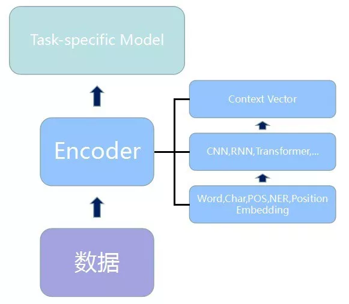
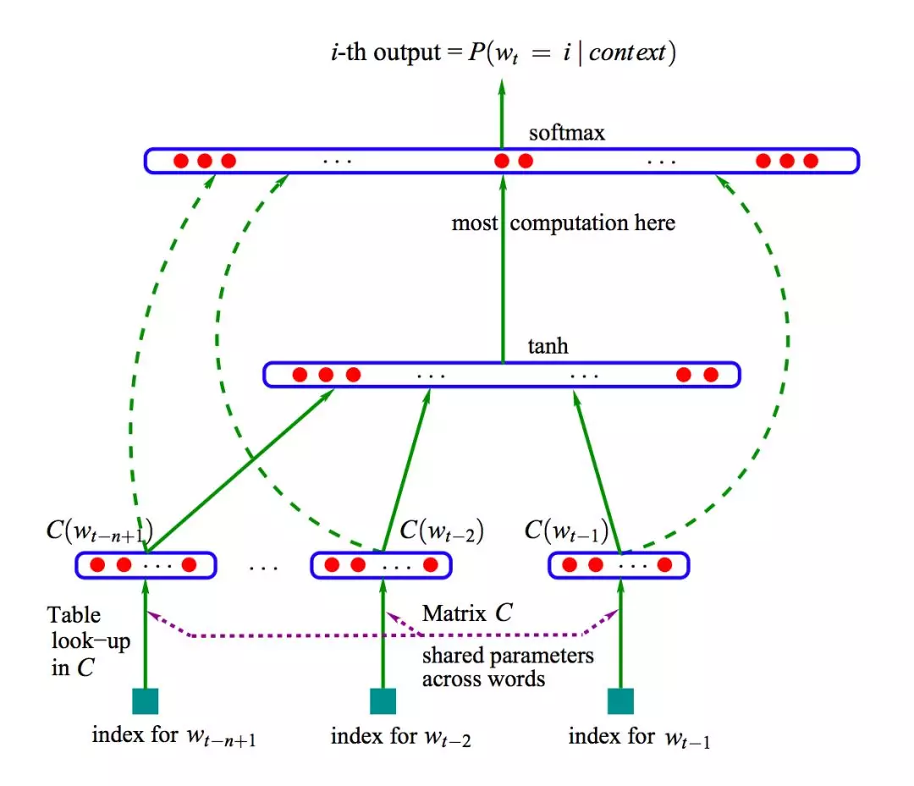
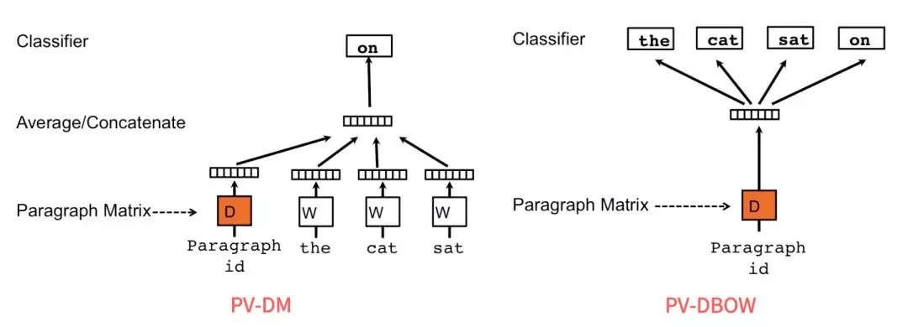
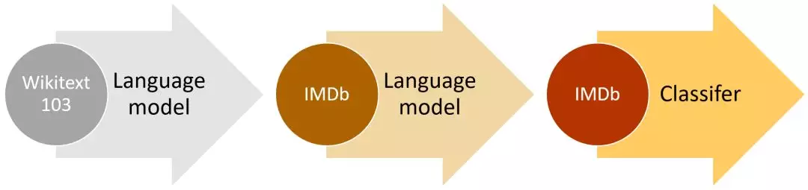
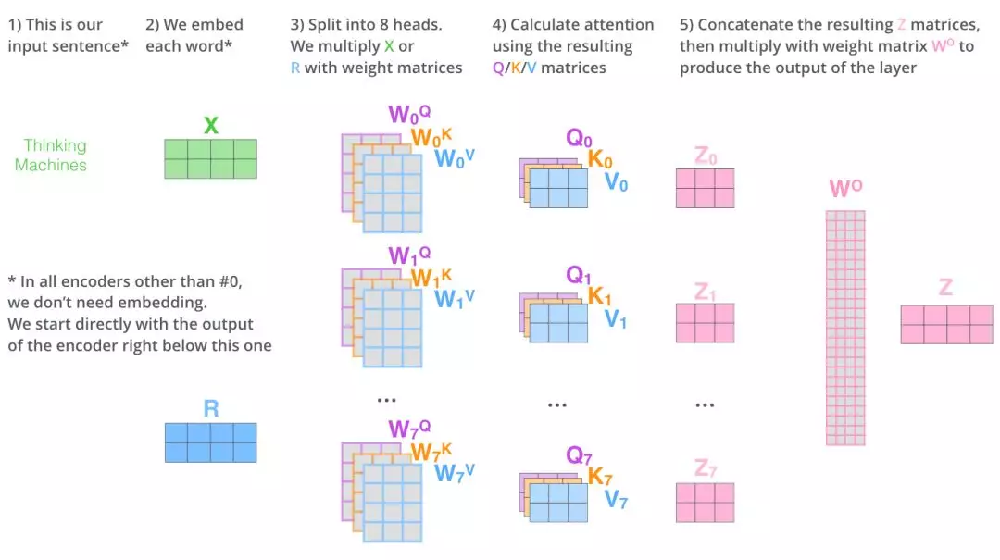
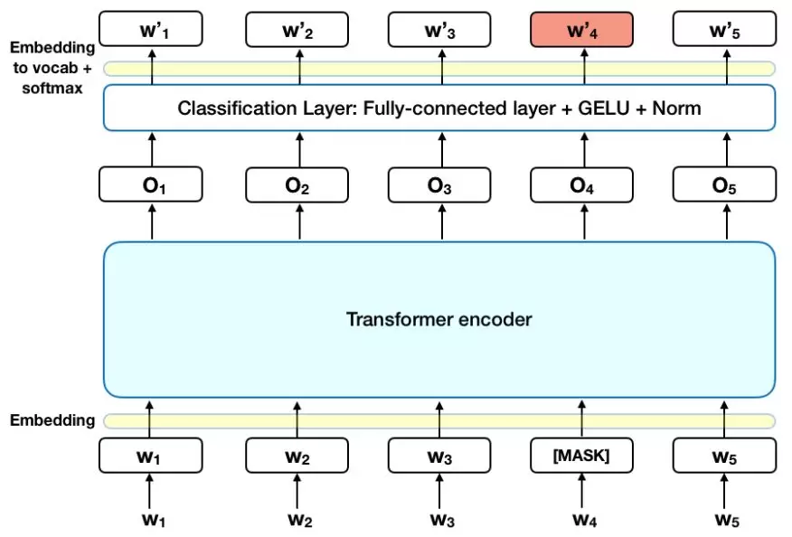
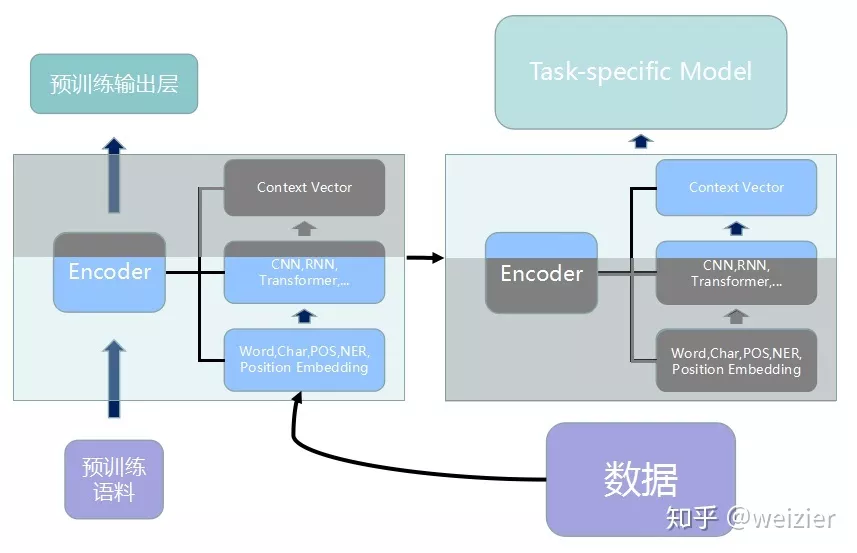
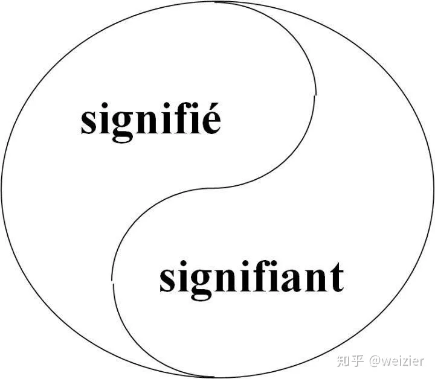
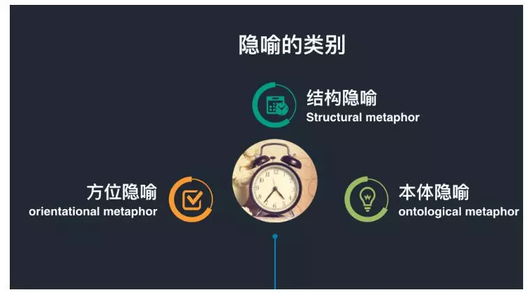

NLP简介¶
通常来说，NLP中监督任务的基本套路都可以用三个积木来进行归纳：
- 文本数据搜集和预处理
- 将文本进行编码和表征
- 设计模型解决具体任务

其中数据处理阶段自不用说，各个任务按照各自的逻辑去处理和得到相应的输入。
而其中的第二阶段Encoder模块与第三阶段的Task-specific Model模块，通常来说，界限并不是特别清晰，二者之间互有渗透。而回顾过去基于深度学习的NLP任务可以发现，几乎绝大多数都比较符合这三层概念。比如很多生成任务的Seq2Seq框架中不外乎都有一个Encoder和一个Decoder，对应到这里的话Decoder更像是一个Task-specific Model，然后相应的将Encoder做一些细微的调整，比如引入Attention机制等等，对于一些文本分类任务的结构，则Encoder模块与Task-specific Model模块的区分更为明显和清晰，Encoder负责提取文本的特征，最后接上一些全连接层和Softmax层便可以当做Task-specific Model模块，如此便完成了一个文本分类任务。
既然很多的NLP任务都可以用这三个模块来进行归纳的话，并且其中数据层和Task-specific Model模块层可能根据具体任务的不同需要做一些相应的设计，而Encoder层便可以作为一个相对比较通用的模块来使用。那么自然会有一个想法，能不能类似于图像领域中的ImageNet上预训练的各种模型，来做一个NLP中预训练好的Encoder模块，然后我拿来直接利用就好了？应该说，这个想法并不难想到，NLP人也花了一些时间去思考NLP中究竟该如何设计一些更通用的可以迁移利用的东西，而不是所有的任务都要“from scratch”。因为如何尽量利用已有的知识、经验和工具，避免重复造轮子，想尽一切办法“站在巨人的肩膀上”快速发展，我想大概也是最朴素的“发展是硬道理”的体现。
1. 梯子出现之前¶
犹如生命的诞生之初，混沌而原始。在word2vec诞生之前，NLP中并没有一个统一的方法去表示一段文本，各位前辈和大师们发明了许多的方法：从one-hot表示一个词到用bag-of-words来表示一段文本，从k-shingles把一段文本切分成一些文字片段到汉语中用各种序列标注方法将文本按语义进行分割，从tf-idf中用频率的手段来表征词语的重要性到text-rank中借鉴了page-rank的方法来表征词语的权重，从基于SVD纯数学分解词文档矩阵的LSA，到pLSA中用概率手段来表征文档形成过程并将词文档矩阵的求解结果赋予概率含义，再到LDA中引入两个共轭分布从而完美引入先验......
1.1 语言模型¶
以上这些都是相对比较传统的方法，在介绍基于深度学习的方法之前，先来看看语言模型。实际上，语言模型的本质是对一段自然语言的文本进行预测概率的大小，即如果文本用S_i来表示，那么语言模型就是要求P(S_i)的大小，如果按照大数定律中频率对于概率无限逼近的思想，求这个概率大小，自然要用这个文本在所有人类历史上产生过的所有文本集合中，先求这个文本的频率P(S_i)，而后便可以通过如下公式来求得 $$ P\left(S_{i}\right)=\frac{c\left(S_{i}\right)}{\sum_{j=0}^{\infty} c\left(S_{j}\right)} $$ 这个公式足够简单，但问题是全人类所有历史的语料这种统计显然无法实现，因此为了将这个不可能的统计任务变得可能，有人将文本不当做一个整体，而是把它拆散成一个个的词，通过每个词之间的概率关系，从而求得整个文本的概率大小。假定句子长度为 T，词用 x 表示，即： $$ P\left(S_{i}\right)=P\left(x_{0}, x_{1}, \ldots, x_{T}\right)=P\left(x_{0}\right) P\left(x_{1} | x_{0}\right) P\left(x_{2} | x_{0}, x_{1}\right) \ldots P\left(x_{T} | x_{0}, x_{1}, x_{2}, \ldots, x_{T-1}\right) $$ 然而，这个式子的计算依然过于复杂，我们一般都会引入马尔科夫假设：假定一个句子中的词只与它前面的 n 个词相关，特别地，当 n=1 的时候，句子的概率计算公式最为简洁： $$ P\left(S_{i}\right)=P\left(x_{0}, x_{1}, \ldots, x_{T}\right)=P\left(x_{0}\right) P\left(x_{1} | x_{0}\right) P\left(x_{2} | x_{1}\right) \ldots P\left(x_{T} | x_{T-1}\right)=P\left(x_{0}\right) \Pi_{i=0}^{T-1} P\left(x_{i+1} | x_{i}\right) $$ 并且把词频的统计用来估计这个语言模型中的条件概率，如下： $$ P\left(x_{i+1} | x_{i}\right)=\frac{c\left(x_{i+1}, x_{i}\right)}{c\left(x_{i}\right)} $$ 这样一来，语言模型的计算终于变得可行。然而，这种基于统计的语言模型却存在很多问题：
第一，很多情况下c\left(x_{i+1}, x_{i}\right)的计算会遇到特别多零值，尤其在 n 取值较大时，这种数据稀疏导致的计算为 0 的现象变得特别严重。所以统计语言模型中一个很重要的方向便是设计各种平滑方法来处理这种情况。
第二， 另一个更为严重的问题是，基于统计的语言模型无法把 n 取得很大，一般来说在 3-gram 比较常见，再大的话，计算复杂度会指数上升。这个问题的存在导致统计语言模型无法建模语言中上下文较长的依赖关系。
第三，统计语言模型无法表征词语之间的相似性。
1.2 NNLM¶
这些缺点的存在，迫使 2003 年 Bengio 在他的经典论文 ***A Neural Probabilistic Language Model***中，首次将深度学习的思想融入到语言模型中，并发现将训练得到的 NNLM（Neural Net Language Model，神经网络语言模型）模型的第一层参数当做词的分布式表征时，能够很好地获取词语之间的相似度。

撇去正则化项，NNLM 的极大目标函数对数似然函数，其本质上是个 N-Gram 的语言模型，如下所示： $$ \begin{array}{c}{L=\frac{1}{T} \sum_{t} \log P\left(w_{t} | w_{t-1}, \ldots, w_{t-n+1} ; \theta\right)+R(\theta)} \ {P\left(w_{t} | w_{t-1}, \ldots, w_{t-n+1} ; \theta\right)=\frac{e^{y_{w_{t}}}}{\sum_{i} e^{y_{i}}}}\end{array} $$ 其中，归一化之前的概率大小（也就是 logits）为： $$ \begin{array}{c}{y=b+W x+U \tanh (d+H x)} \ {x=\left(C\left(w_{t-1}\right), C\left(w_{t-2}\right), \ldots, C\left(w_{t-n+1}\right)\right)}\end{array} $$ x 实际上就是将每个词映射为 m 维的向量，然后将这 n-1 个词的向量 concat 起来，组合成一个 (n-1)*m 维的向量。
**这里可以将 NNLM 的网络结构拆分为三个部分：**第一部分，从词到词向量的映射，通过 C 矩阵完成映射，参数个数为 |V| * m； 第二部分，从 x 到隐藏层的映射，通过矩阵 H，这里的参数个数为 |H| * m * (n-1)； 第三部分，从隐藏层到输出层的映射，通过矩阵 U，参数个数为$ |V| * |H|$；第四部分，从 x 到输出层的映射，通过矩阵 W，参数个数为 |V| * m * (n-1)。
因此，如果算上偏置项的参数个数（其中输出层为 |V|，输入层到隐藏层为 |H|）的话，NNLM 的参数个数为： $$ |V|(1+|H|+m n)+|H|(1+m n-m) $$ 可见 NNLM 的参数个数是所取窗口大小 n 的线性函数，这便可以让 NNLM 能对更长的依赖关系进行建模。不过 NNLM 的最主要贡献是非常有创见性地将模型的第一层特征映射矩阵当做词的分布式表示，从而可以将一个词表征为一个向量形式，这直接启发了后来的 word2vec 的工作。
2. 历史突破——梯子来了¶
自NNLM于2003年被提出后，后面又出现了很多类似和改进的工作，诸如LBL, C&W和RNNLM模型等等，这些方法主要从两个方面去优化NNLM的思想，其一是NNLM只用了左边的n-1个词，如何利用更多的上下文信息便成为了很重要的一个优化思路（如Mikolov等人提出的RNNLM）；其二是NNLM的一个非常大的缺点是输出层计算量太大，如何减小计算量使得大规模语料上的训练变得可行，这也是工程应用上至关重要的优化方向（如Mnih和Hinton提出的LBL以及后续的一系列模型）。
为了更好理解NNLM之后以及word2vec诞生前的情况，我们先来看看现有的几个主要模型都有哪些优缺点。
-
NNLM虽然将N-Gram的阶n提高到了5，相比原来的统计语言模型是一个很大的进步，但是为了获取更好的长程依赖关系，5显然是不够的。再者，因为NNLM只对词的左侧文本进行建模，所以得到的词向量并不是语境的充分表征。还有一个问题就更严重了，NNLM的训练依然还是太慢，在论文中，Bengio说他们用了40块CPU，在含有1400万个词，只保留词频相对较高的词之后词典大小为17964个词，只训练了5个epoch，但是耗时超过3周。按这么来算，如果只用一块CPU，可能需要2年多，这还是在仅有1400万个词的语料上。如此耗时的训练过程，显然严重限制了NNLM的应用。
-
2007年Mnih和Hinton提出的LBL以及后续的一系列相关模型，省去了NNLM中的激活函数，直接把模型变成了一个线性变换，尤其是后来将Hierarchical Softmax引入到LBL后，训练效率进一步增强，但是表达能力不如NNLM这种神经网络的结构；2008年Collobert和Weston 提出的C&W模型不再利用语言模型的结构，而是将目标文本片段整体当做输入，然后预测这个片段是真实文本的概率，所以它的工作主要是改变了目标输出，由于输出只是一个概率大小，不再是词典大小，因此训练效率大大提升，但由于使用了这种比较“别致”的目标输出，使得它的词向量表征能力有限；2010年Mikolov（对，还是同一个Mikolov）提出的RNNLM主要是为了解决长程依赖关系，时间复杂度问题依然存在。

2.1 CBOW 和 Skip-gram¶
2013 年，Tomas Mikolov 连放几篇划时代的论文，其中最为重要的是两篇，Efficient estimation of word representations in vector space 首次提出了 CBOW和Skip-gram模型，进一步地在 Distributed Representations of Words and Phrases and their Compositionality 中，又介绍了几种优化训练的方法，包括 Hierarchical Softmax（当然，这个方法早在 2003 年，Bengio 就在他提出 NNLM 论文中的 Future Work 部分提到了这种方法，并于 2005 年把它系统化发表了一篇论文），Negative Sampling 和 Subsampling 技术。
放出两篇论文后，当时仍在谷歌工作的 Mikolov 又马不停蹄放出了大杀器——word2vec 工具，并在其中开源了他的方法。顺便提一下的是，很多人以为 word2vec 是一种模型和方法，其实 word2vec 只是一个工具，背后的模型是 CBOW 或者 Skip-gram，并且使用了 Hierarchical Softmax 或 Negative Sampling 这些训练的优化方法。
所以准确说来，word2vec 并不是一个模型或算法，只不过 Mikolov 恰好在当时把他开源的工具包起名叫做 word2vec 而已。不过为了叙述简单，在下文我将用 word2vec 来指代上面提到 Mikolov 两篇论文中的一整个相关的优化思想。
**word2vec 对于前人的优化，主要是两方面的工作：模型的简化和训练技巧的优化。**我们先来看看模型的简化方面，也就是耳熟能详的 CBOW 和 Skip-gram。
对于 CBOW 而言，我们可以从它的名字上一窥究竟，它的全称是 Continuous Bag-of-Words，也就是连续的词袋模型，为什么取这个名字，先来看看它的目标函数。 $$ \begin{array}{c}{\frac{1}{T} \sum_{t=1}^{T} \log P\left(w_{t} | c_{t}\right)} \ {P\left(w_{t} | c_{t}\right)=\frac{\exp \left(e{\prime}\left(w_{t}\right){T} x\right)}{\sum_{i=1}^{|V|} \exp \left(e{\prime}\left(w_{i}\right){T} x\right)}, x=\sum_{i \in c} e\left(w_{i}\right)}\end{array} $$ 首先，CBOW 没有隐藏层，本质上只有两层结构，输入层将目标词语境 c 中的**每一个词向量简单求和**（当然，也可以求平均）后得到语境向量，然后**直接与目标词的输出向量求点积**，目标函数也就是要让这个与目标词向量的点积取得最大值，对应的与非目标词的点积尽量取得最小值。
从这可以看出，CBOW 的第一个特点是取消了 NNLM 中的隐藏层，直接将输入层和输出层相连；第二个特点便是在求语境 context 向量时候，语境内的词序已经丢弃（这个是名字中 Continuous 的来源）；第三，因为最终的目标函数仍然是语言模型的目标函数，所以需要顺序遍历语料中的每一个词（这个是名字中 Bag-of-Words 的来源）。
因此有了这些特点（尤其是第二点和第三点），Mikolov 才把这个简单的模型取名叫做 CBOW，简单却有效的典范。

需要注意的是这里每个词对应到两个词向量，在上面的公式中都有体现，其中 $e(wt) $是词的输入向量，而 e'(wt) 则是词的输出向量，或者更准确的来讲，前者是 CBOW 输入层中跟词 wt 所在位置相连的所有边的权值（其实这就是词向量）组合成的向量，而是输出层中与词 wt 所在位置相连的所有边的权值组合成的向量，所以把这一向量叫做输出向量。
同样地，和 CBOW 对应，Skip-gram 的模型基本思想和 CBOW 非常类似，只是换了一个方向：
- CBOW 是让目标词的输出向量 e'(wt) 拟合语境的输入向量 x
- Skip-gram 则是让语境中每个词的输出向量尽量拟合当前词的输入向量 e(wt)，和 CBOW 的方向相反
因此它的目标函数如下： $$ \begin{array}{c}{\frac{1}{T} \sum_{t=1}^{T} \sum_{j \in c} \log P\left(w_{j} | w_{t}\right)} \ {P\left(w_{j} | w_{t}\right)=\frac{\exp \left(e{\prime}\left(w_{j}\right){T} e\left(w_{t}\right)\right)}{\sum_{i=1}^{|V|} \exp \left(e{\prime}\left(w_{i}\right){T} e\left(w_{t}\right)\right)}}\end{array} $$ 可以看出目标函数中有两个求和符号，最里面的求和符号的意义便是让当前的输入词分别和该词对应语境中的每一个词都尽量接近，从而便可以表现为该词与其上下文尽量接近。

和 CBOW 类似，Skip-gram 本质上也只有两层：输入层和输出层，输入层负责将输入词映射为一个词向量，输出层负责将其经过线性映射计算得到每个词的概率大小。
再细心一点的话，其实无论 CBOW 还是 Skip-gram，本质上都是两个全连接层的相连，中间没有任何其他的层。因此，这两个模型的参数个数都是$ 2 × |e| × |V| $，其中 |e| 和 |V| 分别是词向量的维度和词典的大小，相比上文中我们计算得到 NNLM 的参数个数 |V|(1+|H|+|e|n) + |H|(1+|e|n-|e|) 已经大大减小，且与上下文所取词的个数无关了，也就是终于避免了 N-gram 中随着阶数 N 增大而使得计算复杂度急剧上升的问题。
然而，Mikolov 大神说了，这些公式是“impractical”的，他的言下之意是计算复杂度依然和词典大小有关，而这通常都意味着非常非常大，以下是他的原话：
..., and W is the number of words in the vocabulary. This formulation is impractical because the cost of computing ∇ log p(wO|wI ) is proportional to W, which is often large (105–107 terms).
不得不说，大神就是大神，将模型已经简化到了只剩两个全连接层（再脱就没了），依然不满足，还“得寸进尺”地打起了词典的“小算盘”，那么 Mikolov 的“小算盘”是什么呢？
他在论文中首先提到了 Hierachical Softmax，认为这是对 full softmax 的一种优化手段。
Hierachical Softmax 的基本思想就是首先将词典中的每个词按照词频大小构建出一棵 Huffman 树，保证词频较大的词处于相对比较浅的层，词频较低的词相应的处于 Huffman 树较深层的叶子节点，每一个词都处于这棵 Huffman 树上的某个叶子节点。
第二，将原本的一个 |V| 分类问题变成了 log |V| 次的二分类问题，做法简单说来就是，原先要计算 P(wt|ct) 的时候，因为使用的是普通的 softmax，势必要求词典中的每一个词的概率大小。为了减少这一步的计算量，在 Hierachical Softmax 中，同样是计算当前词 wt 在其上下文中的概率大小，只需要把它变成在 Huffman 树中的路径预测问题就可以了，因为当前词 wt 在 Huffman 树中对应到一条路径，这条路径由这棵二叉树中从根节点开始，经过一系列中间的父节点，最终到达当前这个词的叶子节点而组成，那么在每一个父节点上，都对应的是一个二分类问题（本质上就是一个 LR 分类器），而 Huffman 树的构造过程保证了树的深度为 log |V|，所以也就只需要做 log |V| 次二分类便可以求得 P(wt|ct) 的大小，这相比原来 |V| 次的计算量，已经大大减小了。
接着，Mikolov 又提出了负采样的思想，而这一思想也是受了 C&W 模型中构造负样本方法启发，同时参考了 Noise Contrastive Estimation (NCE) 的思想，用 CBOW 的框架简单来讲就是，负采样每遍历到一个目标词，为了使得目标词的概率 P(wt|ct) 最大，根据 softmax 函数的概率公式，也就是让分子中的e^{\prime}\left(w_{t}\right)^{T} x最大，而分母中其他非目标词的e^{\prime}\left(w_{i}\right)^{T} x最小。
普通 softmax 的计算量太大就是因为它把词典中所有其他非目标词都当做负例了，而负采样的思想特别简单，就是每次按照一定概率随机采样一些词当做负例，从而就只需要计算这些负采样出来的负例了，那么概率公式便相应变为： $$ P\left(w_{t} | c_{t}\right)=\frac{\exp \left(e{\prime}\left(w_{t}\right){T} x\right)}{\sum_{i=1}^{K} \exp \left(e{\prime}\left(w_{i}\right){T} x\right)}, x=\sum_{i \in c} e\left(w_{i}\right) $$ 仔细和普通 softmax 进行比较便会发现，将原来的 |V| 分类问题变成了 K 分类问题，这便把词典大小对时间复杂度的影响变成了一个常数项，而改动又非常的微小，不可谓不巧妙。
除此之外，Mikolov 还提到了一些其他技巧，比如对于那些超高频率的词，尤其是停用词，可以使用 Subsampling 的方法进行处理，不过这已经不是 word2vec 最主要的内容了。
自此，经过模型和训练技巧的双重优化，终于使得大规模语料上的训练成为了现实，更重要的是，得到的这些词向量能够在语义上有非常好的表现，能将语义关系通过向量空间关系表征出来。

word2vec 的出现，极大促进了 NLP 的发展，尤其是促进了深度学习在 NLP 中的应用（不过有意思的是，word2vec 算法本身其实并不是一个深度模型，它只有两层全连接），利用预训练好的词向量来初始化网络结构的第一层几乎已经成了标配，尤其是在只有少量监督数据的情况下，如果不拿预训练的 embedding 初始化第一层，几乎可以被认为是在蛮干。
在此之后，一大批 word embedding 方法大量涌现，比较知名的有 GloVe 和 fastText 等等，它们各自侧重不同的角度，并且从不同的方向都得到了还不错的 embedding 表征。
2.2 GloVe¶
先来看看 GloVe 的损失函数： $$ J=\sum_{i=1}^{V} \sum_{j=1}^{V} f\left(X_{i j}\right)\left(w_{i}^{T} w_{j}+b_{i}+b_{j}-\log X_{i j}\right)^{2} $$ 其中 Xij 是两个词 i 和 j 在某个窗口大小中的共现频率（不过 GloVe 对其做了一些改进，共现频率相应有一个衰减系数，使得距离越远的词对共现频率越小一些）， f(Xij) 是一个权重系数，主要目的是共现越多的 pair 对于目标函数贡献应该越大，但是又不能无限制增大，所以对共现频率过于大的 pair 限定最大值，以防训练的时候被这些频率过大的 pair 主导了整个目标函数。
剩下的就是算法的核心部分了，两个b值是两个偏置项，撇去不谈，那么剩下的\left(w_{i}^{T} w_{j}-\log X_{i j}\right)^{2}其实就是一个普通的均方误差函数， wi 是当前词的向量， wj 对应的是与其在同一个窗口中出现的共现词的词向量，两者的向量点乘要去尽量拟合它们共现频率的对数值。
从直观上理解，如果两个词共现频率越高，那么其对数值当然也越高，因而算法要求二者词向量的点乘也越大，而**两个词向量的点乘越大，其实包含了两层含义：**
第一，要求各自词向量的模越大，通常来说，除去频率非常高的词（比如停用词），对于有明确语义的词来说，它们的词向量模长会随着词频增大而增大，因此两个词共现频率越大，要求各自词向量模长越大是有直觉意义的，比如“魑魅魍魉”假如能被拆分成两个词，那么“魑魅”和“魍魉”这两个词的共现频率相比““魑魅”和其他词的共现频率要大得多，对应到“魑魅”的词向量，便会倾向于在某个词向量维度上持续更新，进而使得它的模长也会比较偏大。
第二，要求这两个词向量的夹角越小，这也是符合直觉的，因为出现在同一个语境下频率越大，说明这两个词的语义越接近，因而词向量的夹角也偏向于越小。

此外，可以从 GloVe 使用的损失函数中发现，它的训练主要是两个步骤：统计共现矩阵和训练获取词向量，这个过程其实是没有我们通常理解当中的模型的。
更遑论神经网络，它整个的算法框架都是基于矩阵分解的做法来获取词向量的，本质上和诸如 LSA 这种基于 SVD 的矩阵分解方法没有什么不同，只不过 SVD 分解太过于耗时，运算量巨大，相同点是 LSA 也是输入共现矩阵，不过一般主要以词-文档共现矩阵为主，另外，LSA 中的共现矩阵没有做特殊处理，而 GloVe 考虑到了对距离较远的词对做相应的惩罚等等。
然而，相比 word2vec，GloVe 却更加充分的利用了词的共现信息，word2vec 中则是直接粗暴的让两个向量的点乘相比其他词的点乘最大，至少在表面上看来似乎是没有用到词的共现信息，不像 GloVe 这里明确的就是拟合词对的共现频率。
不过更有意思的还是，GloVe 和 word2vec 似乎有种更为内在的联系，再来看看他们的目标函数有什么不一样，这是 Skip-gram 的目标函数（这里在原来的基础上加上了对于语料的遍历 N）: $$ \begin{array}{c}{\frac{1}{N T} \sum_{n=1}^{N} \sum_{t=1}^{T} \sum_{j \in c} \log P\left(w_{n j} | w_{n t}\right)} \ {P\left(w_{j} | w_{t}\right)=\frac{\exp \left(e{\prime}\left(w_{j}\right){T} e\left(w_{t}\right)\right)}{\sum_{i=1}^{|V|} \exp \left(e{\prime}\left(w_{i}\right){T} e\left(w_{t}\right)\right)}}\end{array} $$ 而这个目标函数是按照语料的顺序去遍历，如果先把语料当中的相关词进行合并，然后按照词典序进行遍历，便可以证明 Skip-gram 实际上和 GloVe 的优化目标一致，有兴趣的可以参考证明细节（arXiv:1611.05962），这里不再赘述。
2.3 fastText¶
word2vec 和 GloVe 都不需要人工标记的监督数据，只需要语言内部存在的监督信号即可以完成训练。而与此相对应的，fastText 则是利用带有监督标记的文本分类数据完成训练。
本质上没有什么特殊的，模型框架就是 CBOW，只不过与普通的 CBOW 有两点不一样，分别是输入数据和预测目标的不同，在输入数据上，CBOW 输入的是一段区间中除去目标词之外的所有其他词的向量加和或平均，而 fastText 为了利用更多的语序信息，将 bag-of-words 变成了 bag-of-features，也就是下图中的输入 x 不再仅仅是一个词，还可以加上 bigram 或者是 trigram 的信息等等。
第二个不同在于，CBOW 预测目标是语境中的一个词，而 fastText 预测目标是当前这段输入文本的类别，正因为需要这个文本类别，因此才说 fastText 是一个监督模型。
而相同点在于，fastText 的网络结构和 CBOW 基本一致，同时在输出层的分类上也使用了 Hierachical Softmax 技巧来加速训练。 $$ -\frac{1}{N} \sum_{n=1}^{N} y_{n} \log f\left(B A x_{n}\right), x_{n}=\sum_{i=1}^{l_{n}} x_{n, i} $$ 这里的x_{n,i}便是语料当中第 n 篇文档的第 i 个词以及加上 N-gram 的特征信息。从这个损失函数便可以知道 fastText 同样只有两个全连接层，分别是 A 和 B，其中 A 便是最终可以获取的词向量信息。

fastText 最大的特点在于快，论文中对这一点也做了详细的实验验证，在一些分类数据集上，fastText 通常都可以把 CNN 结构的模型要耗时几小时甚至几天的时间，急剧减少到只需要消耗几秒钟，不可谓不“fast”。
不过说个八卦，为什么 fastText 结构和 CBOW 如此相似。感兴趣的读者想要继续深挖的话，还可以看看 2015 年 ACL 的一篇论文 Deep Unordered Composition Rivals Syntactic Methods for Text Classification，结构又是何其相似，并且比 fastText 的论文探讨的更为深入一些，但是 fastText 是 2016 年的文章，剩下的大家自己去想好了。
这里面大概一个特别重要的原因就是 fastText 的作者之一便是 3 年前 CBOW 的提出者 Mikolov 本人，只不过昔日的 Mikolov 还在谷歌，如今 3 年时间一晃而过，早已是 Facebook 的人了。
2.4 爬上第一级梯子的革命意义¶
为什么说 word2vec 的出现极大促进了 NLP 领域的发展？
通常以为，word2vec 一类的方法会给每一个词赋予一个**向量的表征**，不过似乎从来没有人想过这个办法为什么行之有效？难道是皇帝的新衣？按理来说，包括 NNLM 在内，这些方法的主要出发点都是将一个词表示成词向量，并将其语义**通过上下文来表征**。
其实，这背后是有理论基础的，1954 年 Harris 提出分布假说（distributional hypothesis），这一假说认为：上下文相似的词，其语义也相似，1957 年 Firth 对分布假说进行了进一步阐述和明确：词的语义由其上下文决定（a word is characterized by the company it keeps），30 年后，深度学习的祖师爷 Hinton 也于 1986 年尝试过词的分布式表示。
而 word2vec 的贡献远不止是给每一个词赋予一个**分布式的表征**，私以为，它带来了一种全新的 NLP 模型建立方法。在这之前，大多数 NLP 任务都要在如何挖掘更多文本语义特征上花费大量时间，甚至这一部分工作占去了整个任务工作量的绝大部分。
而以 word2vec 为代表的 distributed representation 方法大量涌现后（尤其是因为大规模语料上的预训练词向量成为现实，并且被证明确实行之有效之后），算法人员发现利用 word2vec 在预训练上学习到的词向量，初始化他们自己模型的第一层，会带来极大效果的提升，以至于这五年以来，几乎业内的默认做法便是要用无论 word2vec 还是 GloVe 预训练的词向量，作为模型的第一层，**如果不这么做，大约只有两个原因：**1）你很土豪，有钱标注大量监督数据；2）你在蛮干。
而这一个思想，绝不是如它表象所显示的一样，似乎和过去做文本特征没什么太大区别，是的，表象确实是这样，无非是把一个词用了一堆数字来表征而已，这和离散化的特征有什么本质区别吗？
**有，因为它开启了一种全新的 NLP 模型训练方式——迁移学习。**基本思想便是利用一切可以利用的现成知识，达到快速学习的目的，这和人类的进化历程何其相似。
虽然咿咿呀呀囫囵吞枣似的刚开始能够说得三两个词，然而这是“NLP 的一小步，人类 AI 的一大步”。正如人类语言产生之初，一旦某个原始人类的喉部发出的某个音节，经无比智慧和刨根问底考证的史学家研究证实了它具有某个明确的指代意义（无论它指代什么，即便是人类的排泄物），这便无比庄严的宣示着一个全新物种的诞生，我想迁移学习在 NLP 中的这一小步，大概与此同担当。
3. 梯子的一级半¶
除了在 word 级别的 embedding 方法上有大量模型和算法的涌现，同样地，在字符级别、句子级别和段落级别同样有大量模型提出。
word2vec 开源随后的第一年，也就是在 2014 年，还是 Mikolov，在他和另一位作者合作的一篇论文 Distributed Representations of Sentences and Documents 中，提出了可以借鉴 word2vec 思想的两种结构：PV-DM 和 PV-DBOW，分别对应 word2vec 中的 CBOW 和 Skip-gram。
3.1 PV-DM 和 PV-DBOW¶
PV-DM 的全称是 Distributed Memory Model of Paragraph Vectors，和 CBOW 类似，也是通过上下文预测下一个词，不过在输入层的时候，同时也维护了一个文档 ID 映射到一个向量的 look-up table，模型的目的便是将当前文档的向量以及上下文向量联合输入模型，并让模型预测下一个词。
训练结束后，对于现有的文档，便可以直接通过查表的方式快速得到该文档的向量，而对于新的一篇文档，那么则需要将已有的 look-up table 添加相应的列，然后重新走一遍训练流程，只不过此时固定好其他的参数，只调整 look-up table，收敛后便可以得到新文档对应的向量了。
PV-DBOW 的全称则是 Distributed Bag of Words version of Paragraph Vector，和 Skip-gram 类似，通过文档来预测文档内的词，训练的时候，随机采样一些文本片段，然后再从这个片段中采样一个词，让 PV-DBOW 模型来预测这个词。
以此分类任务作为训练方法，说白了，本质上和 Skip-gram 是一样的。这个方法有个致命的弱点，就是为了获取新文档的向量，还得继续走一遍训练流程，并且由于模型主要是针对文档向量预测词向量的过程进行建模，其实很难去表征词语之间的更丰富的语义结构，所以这两种获取文档向量的方法都未能大规模应用开来。

3.2 Skip-thoughts¶
2015 年，多伦多大学的 Kiros 等人提出了一个很有意思的方法叫 Skip-thoughts。同样也是借鉴了 Skip-gram 的思想，但是和 PV-DBOW 中利用文档来预测词的做法不一样的是，Skip-thoughts 直接在句子间进行预测，也就是将 Skip-gram 中以词为基本单位，替换成了以句子为基本单位，具体做法就是选定一个窗口，遍历其中的句子，然后分别利用当前句子去预测和输出它的上一句和下一句。
对于句子的建模利用的 RNN 的 sequence 结构，预测上一个和下一个句子时候，也是利用的一个 sequence 的 RNN 来生成句子中的每一个词，所以这个结构本质上就是一个 Encoder-Decoder 框架，只不过和普通框架不一样的是，Skip-thoughts 有两个 Decoder。
在今天看来，这个框架还有很多不完善或者可以改进的地方（作者也在论文中分别提到了这些 future works），比如输入的 Encoder 可以引入 attention 机制，从而让 Decoder 的输入不再只是依赖 Encoder 最后一个时刻的输出；Encoder 和 Decoder 可以利用更深层的结构；Decoder 也可以继续扩大，可以预测上下文中更多的句子；RNN 也不是唯一的选择，诸如 CNN 以及 2017 年谷歌提出的 Transformer 结构也可以利用进来，后来果不其然谷歌的 BERT 便借鉴了这一思路，当然这是后话了，留下暂且不表。

3.3 Quick-thoughts¶
2018 年的时候，在 Skip-thoughts 的基础上，Google Brain 的 Logeswaran 等人将这一思想做了进一步改进，他们认为 Skip-thoughts 的 Decoder 效率太低，且无法在大规模语料上很好的训练（这是 RNN 结构的通病）。
所以他们把 Skip-thoughts 的生成任务改进成为了一个分类任务，具体说来就是把同一个上下文窗口中的句子对标记为正例，把不是出现在同一个上下文窗口中的句子对标记为负例，并将这些句子对输入模型，让模型判断这些句子对是否是同一个上下文窗口中，很明显，这是一个分类任务。可以说，仅仅几个月之后的 BERT 正是利用的这种思路。而这些方法都和 Skip-thoughts 一脉相承。

3.4 InferSent¶
除了 Skip-thoughts 和 Quick-thoughts 这两种不需要人工标记数据的模型之外，还有一些从监督数据中学习句子表示的方法。
比如 2017 年 Facebook 的研究人员 Conneau 等人提出的 InferSent 框架，它的思想特别简单，先设计一个模型在斯坦福的 SNLI（Stanford Natural Language Inference）数据集上训练，而后将训练好的模型当做特征提取器，以此来获得一个句子的向量表示，再将这个句子的表示应用在新的分类任务上，来评估句子向量的优劣。框架结构如下图所示：

这个框架最底层是一个 Encoder，也就是最终要获取的句子向量提取器，然后将得到的句子向量通过一些向量操作后得到句子对的混合语义特征，最后接上全连接层并做 SNLI 上的三分类任务。
做过句子匹配任务的一定知道，这个框架是一个最基本（甚至也是最简陋）的句子匹配框架。对于底层的 Encoder 来说，论文作者分别尝试了 7 种模型，然后分别以这些模型作为底层的 Encoder 结构在 SNLI 上进行监督训练。
训练完成后，在新的分类任务上进行评估，最后发现当 Encoder 使用 BiLSTM with max pooling 结构时，对于句子的表征性能最好。对具体细节感兴趣的可以参考他们的论文***Supervised Learning of Universal Sentence Representations from Natural Language Inference Data***。
3.5 General Purpose Sentence Representation¶
此外，除了 InferSent 这种单个任务的监督学习外，最新的工作逐渐将多任务的联合学习应用到获取句子的表征中。
例如 Subramanian 等人发表在 ICLR 2018 上的 Learning General Purpose Distributed Sentence Representations via Large Scale Multi-task Learning，就提出了**利用四种不同的监督任务来联合学习句子的表征**，这四种任务分别是：Natural Language Inference，Skip-thougts，Neural Machine Translation 以及 Constituency Parsing 等。
作者的出发点也特别简单，通用的句子表征应该通过侧重点不同的任务来联合学习到，而不是只有一个特定任务来学习句子表征，后来作者在论文中的实验也确实证明了这点。
实验的具体做法是，先用联合学习的方法在上述四个任务上进行训练，训练结束后，将模型的输出作为句子的表征（或者把这个联合学习的模型作为特征提取器），然后直接在这个表征上接上非常简单的全连接层做分类器，并且同时保证最底层的特征提取器中参数**不动**（也就是只把它当做特征提取器），再在新的分类任务上做训练（只训练最后接上的全连接层分类器），最后根据训练出来的简单分类器在各自分类任务的测试集上做评估。
最后作者惊喜的发现很多任务上他们的简单分类器都要超过当时的最好结果，并且他们还发现联合训练中**不同的任务对于句子表征中的不同方面有不同的贡献**。
3.6 Universal Sentence Encoder¶
同样在 2018 年，谷歌的 Daniel Cer 等人在论文 Universal Sentence Encoder 中提出的思路基本和 General Purpose Sentence Representation 的工作一样，只不过作者提出了利用 Transformer 和 DAN（上文提到过的和 CBOW 与 fastText 都神似的 Deep Unordered Composition Rivals Syntactic Methods for Text Classification）两种框架作为句子的 Encoder。
Transformer 结构更为复杂，参数更多，训练也相对比较耗时，但是一般来说效果会更好一些。对应的，DAN 结构简单，只有两个隐藏层（甚至可以减小为只需要一个隐藏层），参数比较少，训练相对比较省时省资源，但是一般来说效果会差一些（并不是绝对，论文中也发现某些场景下 DAN 的效果甚至更好）。然后作者既在无标记数据上训练，也在监督数据上训练，最后在十个分类任务上进行迁移学习的评估。此外，作者还放出了他们预训练好的 Encoder，可以供迁移学习的句子特征提取器使用。
预训练 Encoder：

4. 拨开迷雾——第二级梯子若隐若现¶
4.1 戈多会来吗？¶
上面我们介绍了好几种获取句子表征的方法，然而值得注意的是，我们并不是只对如何获取更好的句子表征感兴趣，其实更有趣的是，这些方法在评估他们各自模型性能的时候所采取的方法，回过头去进行梳理，我们发现，无论是稍早些的InferSent，还是2018年提出的Quick-thoughts和Multi-task Learning获取通用句子表征的方法，他们无一例外的都使用了同一种思路：将得到的句子表征，在新的分类任务上进行训练，而此时的模型一般都只用一个全连接层，然后接上softmax进行分类，分类器足够简单，足够浅层，相比那些在这些分类任务上设计的足够复杂的模型来说简直不值一提，然而令人大跌眼镜的是，结果无一例外的这些简单的分类器都能够比肩甚至超越他们各自时代的最好结果，这不能不说是个惊喜。而创造这些惊喜的背后功臣，就是迁移学习。更进一步地，迁移学习的本质，就是给爬上“巨人的肩膀”提供了一架结实的梯子。
具体的，在这些句子级别的任务中，属于InferSent和Quick-thoughts这些模型的“巨人肩膀”便是他们各自使用的训练数据，迁移学习最后给他们搭了一个梯子，然而这个梯子并没有很好上，磕磕绊绊，人类AI算是站在第一级梯子上，试探性的伸出了一只腿，另一只腿即将跨出，只可惜并不知道是否有他们苦苦等待了五年之久的戈多？
4.2 一丝曙光¶
2017年，Salesforce的Bryan McCann和其他一些人，发表了一篇文章《Learned in Translation: Contextualized Word Vectors》，在这篇文章中，他们首先用一个Encoder-Decoder框架在机器翻译的训练语料上进行预训练，而后用训练好的模型，只取其中的Embedding层和Encoder层，同时在一个新的任务上设计一个task-specific模型，然后将原先预训练好的Embedding层和Encoder层的输出作为这个task-specific模型的输入，最终在新的任务场景下进行训练。他们尝试了很多不同的任务，包括文本分类，Question Answering，Natural Language Inference和SQuAD等等，并在这些任务中，与GloVe作为模型的输入时候的效果进行比较，实验结果表明他们提出的Context Vectors在不同任务中不同程度的都带来了效果的提升。

和上文中提到的诸如 Skip-thoughts 方法有所不同的是，CoVe 更侧重于如何将现有数据上预训练得到的表征迁移到新任务场景中，而之前的句子级任务中**大多数都只把迁移过程当做一个评估他们表征效果的手段**，因此观念上有所不同。
那么，CoVe 似乎通过监督数据上的预训练，取得了让人眼前一亮的结果，是否可以进一步地，撇去监督数据的依赖，直接在无标记数据上预训练呢？
4.3 ELMo¶
2018年的早些时候，AllenNLP的Matthew E. Peters等人在论文《Deep contextualized word representations》（该论文同时被ICLR和NAACL接受，并且还获得了NAACL最佳论文奖，可见这篇论文的含金量）中首次提出了ELMo，它的全称是Embeddings from Language Models，从名称上可以看出，ELMo为了利用无标记数据，使用了语言模型，我们先来看看它是如何利用语言模型的。

基本框架是一个双层的 Bi-LSTM，不过在第一层和第二层之间加入了一个残差结构（一般来说，残差结构能让训练过程更稳定）。做预训练的时候，ELMo 的训练目标函数为： $$ \sum_{k=1}^{N} \log p\left(t_{k} | t_{1}, \ldots, t_{k-1}\right)+\log p\left(t_{k} | t_{k+1}, \ldots, t_{N}\right) $$ 这个式子很清晰，前后有两个概率，第一个概率是来自于正向的由左到右的 RNN 结构，在每一个时刻上的 RNN 输出（也就是这里的第二层 LSTM 输出），然后再接一个 Softmax 层将其变为概率含义，就自然得到了p\left(t_{k} | t_{1}, \dots, t_{k-1}\right)；与此类似，第二个概率来自反向的由右到左的 RNN 结构，每一个时刻 RNN 的输出经过 Softmax 层后也能得到一个概率大小，表示从某个词的下文推断该词的概率大小。
ELMo 的基本框架便是 2-stacked biLSTM + Residual 的结构，不过和普通 RNN 结构的不同之处在于，ELMo 借鉴了 2016 年 Google Brain 的 Rafal Jozefowicz 等人发表的 Exploring the Limits of Language Modeling，其主要改进在于输入层和输出层不再是 word，而是变为了一个 char-based CNN 结构，ELMo 在输入层和输出层考虑了使用同样的这种结构，该结构如下图示：

这样做有什么好处呢？因为输入层和输出层都使用了这种 CNN 结构，我们先来看看输出层使用这种结构怎么用，以及有什么优势。我们都知道，在 CBOW 中的普通 Softmax 方法中，为了计算每个词的概率大小，使用的如下公式的计算方法： $$ P\left(w_{t} | c_{t}\right)=\frac{\exp \left(e{\prime}\left(w_{t}\right){T} x\right)}{\sum_{i=1}^{|V|} \exp \left(e{\prime}\left(w_{i}\right){T} x\right)}, x=\sum_{i \in c} e\left(w_{i}\right) $$ 说白了，也就是先通过向量点乘的形式计算得到 logits，然后再通过 softmax 变成概率意义，这本质上和普通分类没什么区别，只不过是一个较大的 |V| 分类问题。
现在我们假定 char-based CNN 模型是现成已有的，对于任意一个目标词都可以得到一个向量表示 CNN(tk) ，当前时刻的 LSTM 的输出向量为 h，那么便可以通过同样的方法得到目标词的概率大小： $$ p\left(t_{k} | t_{1}, \ldots, t_{k-1}\right)=\frac{\exp \left(\operatorname{CNN} \left(t_{k}\right)^{T} h\right)}{\sum_{i=1}^{|V|} \exp \left(\operatorname{CNN} \left(t_{i}\right)^{T} h\right)}, h=\operatorname{LSTM}\left(t_{k} | t_{1}, \ldots, t_{k-1}\right) $$ 在原论文中，把这种先经过 CNN 得到词向量，然后再计算 Softmax 的方法叫做 CNN Softmax。利用 CNN 解决有三点优势值得注意：
- CNN 能减少普通做 Softmax 时全连接层中的必须要有的 |V|h 的参数规模，只需保持 CNN 内部的参数大小即可。一般来说，CNN 中的参数规模都要比 |V|h 的参数规模小得多；
- CNN 可以解决 OOV （Out-of-Vocabulary）问题，这个在翻译问题中尤其头疼；
- 在预测阶段，CNN 对于每一个词向量的计算可以预先做好，更能够减轻 inference 阶段的计算压力。
补充一句，普通 Softmax 在大词典上的计算压力，都是因为来自于这种方法需要把一个神经网络的输出通过全连接层映射为单个值（而每个类别需要一个映射一次。一次 h 大小的计算规模，|V| 次映射便需要总共 |V|h 这么多次的映射规模），对于每个类别的映射参数都不同，而 CNN Softmax 的好处就在于能够做到对于不同的词，**映射参数都是共享的*，这个共享便体现在使用的 CNN 中的参数都是同一套，从而大大减少参数的规模。
同样的，对于输入层，ELMo 也是用了一样的 CNN 结构，只不过参数不一样而已。和输出层中的分析类似，输入层中 CNN 的引入同样可以减少参数规模。不过 Exploring the Limits of Language Modeling 文中也指出了训练时间会略微增加，因为原来的 look-up 操作可以做到更快一些，对 OOV 问题也能够比较好的应对，从而把词典大小不再限定在一个固定的词典大小上。
最终 ELMo 的主要结构便如下图（b）所示，可见输入层和输出层都是一个 CNN，中间使用 Bi-LSTM 框架，至于具体细节便如上两张图中所示。

最后，在大规模语料上训练完成的这种 CNN-BIG-LSTM 模型，怎么用呢？其实，如果把每一层的输出结果拿出来，这里大概有三层的词向量可以利用：输入层 CNN 的输出，即是 LSTM 的输入向量，第一层 LSTM 的输出和第二层的输出向量。
又因为 LSTM 是双向的，因此对于任意一个词，如果 LSTM 的层数为 L 的话，总共可获得的向量个数为 2L+1，表示如下： $$ R_{k}=x_{k}, \overrightarrow{\mathbf{h}} k, j, \overleftarrow{\mathbf{h}} k, j, j=[1,2, \ldots, L] $$ 到这里还只是把 ELMo 的向量给抽取出来了。对于每一个词，可以根据下面的式子得到它的向量，其中 γ 是一个 scale 因子，加入这个因子主要是想将 ELMo 的向量与具体任务的向量分布拉平到同一个分布水平，这时候便需要这么一个缩放因子了。
另外， sj 便是针对每一层的输出向量，利用一个 softmax 的参数来学习不同层的权值参数，因为不同任务需要的词语意义粒度也不一致，一般认为浅层的表征比较倾向于句法，而高层输出的向量比较倾向于语义信息。因此通过一个 softmax 的结构让任务自动去学习各层之间的权重，自然也是比较合理的做法。
$$
\mathbf{E} \mathbf{L} \mathbf{M} \mathbf{o} k^{t a s k}=\gamma^{t a s k} \sum j=0^{L} s_{j}^{t a s k} \mathbf{h}_{k, j}
$$

前面我们说过，无论是基于传统统计的 N-gram 还是普通神经网络的 NNLM 结构，都会有一个很严重的问题，**那就是计算复杂度随着上下文窗口 N 大小的增大急剧上升。**其中 N-gram 是指数上升，NNLM 是以 |d| × N 的形式增加，|d| 是词向量的维度，虽然 NNLM 已经改观了很多，但依然是一个斜率很大的线性增加关系。
后来 CBOW 和 Skip-gram 以及再后来的 GloVe 终于做到了计算复杂度与所选窗口大小无关，只与词典大小和词向量维度相关。
不过需要指出的是，这里讨论的计算复杂度只是预测单个词的计算时间复杂度，如果是求整个输入序列的话，还是避免不了要与序列长度相关，在这一点上和下面要分析的 RNN 在横向的时间序列上有一个时间复杂度，其原因是一致的。并且近些年得益于硬件持续的摩尔定律发挥威力，机器的计算能力也有长足的进步，因此在这两方面因素的作用下，以 word2vec 为代表的方法大放光彩，引领了一波 NLP 的发展浪潮。
然而，在今天看来，无论 word2vec 中的模型、还是 GloVe 的模型，都过于简单，它们都受限于所使用的模型表征能力，某种意义上都只能得到比较偏上下文共现意义上的词向量，并且也很少考虑过词序对于词的意义的影响（比如 CBOW 从其名称来看就是一个 bag-of-words，在模型的输入中没有词序的概念）。
理论上，RNN 结构的计算复杂度，跟两个方向上都有关系，一方面是纵向上，另一方面是横向上。
-
纵向上主要是 RNN 结构本身的时间复杂度，这个复杂度只与 RNN 结构内部的 hidden state 维度以及模型结构的复杂度，在 ELMo 中的话还跟词典大小相关（因为最后一层还是一个词典大小上的分类问题，以及输入也需要维护一个词典大小的 loop up 操作）。
-
在横向上的计算复杂度，就主要是受制于输入序列的长度，而 RNN 结构本身因为在时间序列上共享参数，其自身计算复杂度这一部分不变，因而总的 ELMo 结构计算复杂度主要有词典大小、隐藏层输出维度大小、模型的结构复杂度以及最后的输入序列长度。前三者可以认为和之前的模型保持一致，最后的输入序列长度，也只是与其保持线性关系，虽然系数是单个 RNN 单元的计算复杂度，斜率依然很大（通常 RNN 结构的训练都比较费时），但是在机器性能提升的情况下，这一部分至少不是阻碍词向量技术发展的最关键的因素了。
因此，在新的时代下，机器性能得到更进一步提升的背景下，算法人员都急需一种能够揭示无论词还是句子更深层语义的方法出现，我想 ELMo 正是顺应了这种时代的需要而华丽诞生。
ELMo 的思想足够简单，相比它的前辈们，可以说 ELMo 并没有本质上的创新，连模型也基本是引用和拼接别人的工作，它的思想在很多年前就已经有人在用，并没有特别新奇的地方。
这似乎从反面证明了真正漂亮的工作从来不是突出各自的模型有多么绚丽，只有无其他亮点的论文，才需要依靠描摹了高清足够喜人眼球的图片去吸引评审人的注意力。因此从这个角度去看，似乎可以得出一个啼笑皆非的结论：论文的漂亮程度与论文图的漂亮程度呈反比。
但同时它的效果又足够惊艳，它的出现，在 2018 年初，这个也许在 NLP 历史上并没有多么显眼的年头，掀起了一阵不小的波澜，至少在 6 项 NLP 任务上横扫当时的最好结果，包括 question answering(SQuAD), textual entailment(SNLI), semantic role labelling(SRL), named entity extraction(NER), coreference resolution(Coref), and sentiment analysis(SST-5)。
而后来的故事以及可预见的将来里，这或许仅仅只是一个开始，就如山洪海啸前的一朵清秀的涟漪。
4.4 ULMFit¶
差不多和ELMo同期，另一个同样非常惊艳的工作也被提出来，这个团队是致力于将深度学习普及和易用的Fast AI，而论文的两位共同作者之一的Jeremy Howard，其实就是FastAI的创始人，是Kaggle之前的president和首席科学家，并且亲自参与过Kaggle上的很多比赛，长期排在排行榜的第一。在他们的论文《Universal Language Model Fine-tuning for Text Classification》中，他们提出了ULMFit结构，其实这本质上他们提出的是一个方法，而不是具体的某种结构或模型，只不过正如论文标题所言，他们主要把它应用在了文本分类的问题中。和ELMo相同的地方在于，ULMFit同样使用了语言模型，并且预训练的模型主要也是LSTM，基本的思路也是预训练完成后去具体任务上进行finetune，但是不同的地方也有很多，分别来讲讲。
首先，ULMFit的预训练和finetune过程主要可以分为三个阶段，分别是在大规模语料集上（比如Wikitext 103，有103million个词）先预训练，然后再将预训练好的模型在具体任务的数据上重新利用语言模型来finetune一下（这是第一次finetune，叫做LM finetune），而后再根据具体任务设计的一个模型上，将预训练好的模型当做这个任务模型的多层，再一次finetune（这是第二次finetune，如果是分类问题的话可以叫做Classifier finetune），整个过程如下所示：


其次，所使用的模型来自于 2017 年 Salesforce 的论文 Regularizing and Optimizing LSTM Language Models，在这篇文章中，他们提出了 AWD-LSTM，正如名字中所揭示的，这个框架更多的是一种训练方法，主要思想分为两大块，其中 Averaged SGD 是指先将模型训练到一定 epoch，然后再将其后的每一轮权值进行平均后，得到最终的权值，用公式表示就是，普通的 SGD 方法权值更新过程为： $$ w_{k+1}=w_{k}-\gamma_{k} \nabla f\left(w_{k}\right) $$ 其中 k 代表迭代次数，而 f 则是 loss function，这就是普通的一个 SGD 权值更新迭代式子，那么 ASGD 则把它变成了： $$ w=\frac{1}{K-T+1} \sum_{i=T}^{K} w_{i} $$ 其中 T 是一个阈值，而 K 是总共的迭代次数，这个式子的意思就是把迭代到第 T 次之后，对该参数在其后的第 T 轮到最后一轮之间的所有值求平均，从而得到最后模型的该参数值。而相应的，普通的 SGD 则是直接取 w = wk 作为最后模型的参数值。
除了使用 ASGD 方法训练模型之外，在普通 LSTM 上一个时刻和下一个时刻之间的隐藏层之间是有连接的，并且这个连接通过一个全连接的矩阵相连，而这个模型则用了 DropConnect 的方法随机 drop 掉一些连接，从而减少了一些过拟合的风险，当然在输入层到隐藏层之间也有正常的 dropout 操作。
第三，微调方法设计非常精妙。作者提出了几种微调的技巧，它们是：discriminative fine-tuning, slanted triangular learning rates 以及 gradual unfreezing，分别来看一下。
discriminative fine-tune 的基本思想是针对不同层在训练更新参数的时候，赋予不同的学习率。这里的出发点是，对于 NLP 的深度学习模型来说，不同层的表征有不同的物理含义，比如浅层偏句法信息，高层偏语义信息，因此对于不同层的学习率不同，自然就是比较合理的了。具体公式如下： $$ \theta_{t}{l}=\theta_{t-1}{l}+\eta^{l} \nabla_{\theta^{l}} J(\theta) $$ 这里的 \eta^{l} 便是不同的层 l 有不同的学习率，原文也给出了具体的选择：先指定最后一层的学习率，然后根据下式得到前面层的学习率，基本思想是让浅层的学习率要更小一些。 $$ \eta{l-1}=\frac{\eta{l}}{2.6} $$ 而对于slanted triangular learning rates来说，主要思想便是在finetune的第一阶段，希望能够先稳定住原来已经在大规模语料集上已经预训练好的参数，所以选择一个比较小的finetune学习率；尔后希望能够逐步加大学习率，使得学习过程能够尽量快速；最后，当训练接近尾声时，逐步减小学习率，这样让模型逐渐平稳收敛（这个思想，个人觉得大概借鉴了2017年谷歌提出Transformer时用到的warm up的学习率调节方法，这个方法也是在训练的时候先将学习率逐步增大，尔后再逐步减小）。因此，这样一个三段论式的学习过程，用图表示如下

另一个 finetune 的技巧是 gradual unfreezing，主要思想是把预训练模型在新任务上 finetune 时，逐层解冻模型，也就是先 finetune 最后一层，然后再解冻倒数第二层，把倒数第二层和最后一层一起 finetune，然后再解冻第三层。以此类推，逐层往浅层推进，最终 finetune 整个模型或者终止到某个中间层。这样做的目的也是为了 finetune 过程能够更平稳。
当然，值得提出的是，因为 ULMFiT 中包含了两次 finetune，即在新任务上用语言模型 finetune 和在新任务上 finetune 训练一个最终的 task-specifi-model（比如分类器）。
而论文中主要把 discriminative fine-tuning 和 slanted triangular learning rates 这两个技巧用在了语言模型的 finetune 阶段，把最后一个 gradual unfreezing 的技巧应用在最终 task-specifi-model 的 finetune 阶段。
通过上面的这些方法，**ULMFiT 最终在分类任务上表现惊艳，尤其是只需要 100 个标记数据，就能够学习到一个表现非常 comparable 的分类器。**不得不说，这个过程中预训练的语言模型，对最终表现起到了至关重要的作用。
4.5 GPT¶
大规模语料集上的预训练语言模型这把火被点燃后，整个业界都在惊呼，原来预训练的语言模型远不止十年前 Bengio 和五年前 Mikolov 只为得到一个词向量的威力。
然而很快在 2018 年 6 月，不再属于“钢铁侠”马斯克的 OpenAI，发了一个大新闻，相关论文是***Improving Language Understanding by Generative Pre-Training***，往这把火势正猛的烈焰上加了一剂猛料，从而将这把火推向了一个新的高潮。
OpenAI 的猛料配方里，第一剂主料便是谷歌于 2017 年中提出的 ***Transformer*****框架**（Attention Is All You Need）。因此，让我们先来弄明白 Transformer 里面都有什么东西。
私以为，Transformer 里最为核心的机制是 Self-attention，正因为 Self-attention 的存在，才使得 Transformer 在做类似翻译问题的时候，可以让其 Encoder 不用做序列输入，而是将整个序列一次全输入，并且超长序列的输入也变得可能。而具体到 Self-attention 中，可以用下图表示：

简单说来，输入为句子的矩阵，先分别通过三个全连接矩阵将输入矩阵变化为三个矩阵，分别为 Q, K 和 V，然后通过 Q 和 K 计算得到一些权值，将这些权值加权求和到 V 矩阵上，便可以得到一个新的矩阵表示。
而 Self-attention 中的多头机制便是将这样的操作分别进行多次，让句子的表征充分学习到不同的侧重点，最终将这些多头学习出来的表征 concat 到一起，然后再同一个全连接网络，便可以得到这个句子最终 Self-attention 下新的表示。
将其中的每一个头的操作过程用公式表示如下，需要注意的是 softmax 是针对矩阵的 row 方向进行操作得到的。所以，说白了，这个公式表示的意思就是针对 V 进行加权求和，加权权值通过 Q 和 K 的点乘得到。

不过其实 Self-attention 和普通 attention 机制在形式上几乎完全等价。主要区别在于，对于普通的 attention 机制，输入可能有多个，并且下式在求得e_{ij}中的v_a^T实际上是一个全连接网络，将式子右边的部分（也就是 attention 的输入）映射为一个值，从而可以根据这个值计算 attention 的权值大小。
除此之外，普通 attention 和 self-attention 并没有本质不同，最大的区别还是在于在自我输入上计算 attention 权值大小。

在 Transformer 的 Encoder 中，还有一些其他设计，比如加入 position embedding（因为 Transformer 的 Encoder 中不是时序输入词序列，因此 position embedding 也是主要位置信息）；Residual 结构，使得模型的训练过程更为平稳；此外还有 normalization 层，接着便是 feed forward 层（本质上是一个两层的全连接网络，中间加一个 ReLu 的激活函数）。
Decoder 的结构与此类似，只不过在进行 decode 的时候，会将 Encoder 这边的输出作为 Decoder 中 Self-attention 时的 K 和 V。

对于 decode 过程，具体来看，大致过程如下。

Decoder 实际上还有很多细节，一般来说，训练时 Decoder 中的输入可以用矩阵形式一次完成当前整个序列的 decode 过程，因为 ground truth 已经提前知道，只需做好每个词的 mask 就好（为了避免待预测的词影响到当前的输入）。
然而在做 inference 的时候，Decoder 必须按照序列输入，因为在生成每一个词的时候，必须先生成它的前一个词，无法一次将整个序列全部生成（当然理论上也可以，但是效果并不好）。
在矩阵运算过程中，**Decoder 中有许多 mask 操作，参与运算的三个矩阵 Q,K 和 V 都要做许多 mask 操作，主要有两方面作用：**一方面是消除输入句子本身长度之外的 padding 影响，另一方面是 decoder 必须要求不能提前看到待生成的词。
除了 mask 操作，另外值得注意的是，和 Encoder 中只有一种类型 Self-attention 不同的是，Decoder 的 attention 实际包含两部分：
第一部分是带有 mask 的 Self-attention，通过 mask 将 decode 阶段的 attention 限定只会 attention 到已经生成过的词上，因此叫做 Mask Self-attention。
第二部分是普通的 Self-attention 操作，不过这时的 K 和 V 矩阵已经替换为 Encoder 的输出结果，所以本质上并非一个 Self-attention。
下面的动图很好地表现了 decoding 过程，生成每一个词的时候，既和 Encoder 的输出信息有关，也和已经生成过的词相关。

大体介绍完 Transformer 后，再看看 GPT 中是怎么用 Transformer 的。按照论文的说法，GPT 使用的 Transformer 是只用了 Decoder，因为对于语言模型来讲，确实不需要 Encoder 的存在。
而具体模型，他们参考了 2018 年早些时候谷歌的 Generating Wikipedia by Summarizing Long Sequences，GPT 名称中的 Generative 便是源自这篇文章，二者都有用到生成式方法来训练模型，也就是生成式 Decoder。
关于这篇论文中提到的 T-DMCA，实际上就是一个 Decoder，只不过这篇文章中要做超长的序列输入（可以长达 11000 个词），为了能够高效节省时间和内存的处理如此长的序列，做了一些 Memory-Compressed 工作，主要是两方面：
一方面是把一个 batch 内部的序列按长度进行分组，然后分别在每个组内部进行 self-attention 操作，避免将一些很短的句子也 padding 到整个语料的最大长度；另一方面，通过 CNN 操作，把 K 和 V 压缩到序列长度更小的一个矩阵，同时保持 Q 不变，这样也能在相当程度上减少计算量。

除了这些具体的模型细节外，GPT 本质上就是用了语言模型的目标函数来优化和训练 Transformer-Decoder，这和上文提到过的语言模型保持一致。
利用语言模型的目标函数预训练完成后，便可以在具体任务上进行 finetune，和 ULMFiT 中的 finetune 分为两个阶段的方法不一样的是，GPT 直接把这两个过程糅合到一个目标函数中，如： $$ L_{3}(C)=L_{2}(C)+\lambda L_{1}(C) $$ 其中 L2 是 task-specific 的目标函数， L1 则是语言模型的目标函数。论文中说这种联合学习方式能够让训练效果更好。而在具体如何做迁移学习的方面，GPT 大概也同样借鉴了上面提到的***Generating Wikipedia by Summarizing Long Sequences*** 中的做法，非常巧妙地将整个迁移学习的框架做到非常精简和通用。
分类问题中，直接在原序列的开始和末尾添加表示开始和末尾的符号，在 Text Entailment 问题中，将 Premise 和 Hypothesis 通过一个中间分隔符“$”连接起来成为一个序列，然后同样在开头和末尾添加标记符号。
文本相似问题中，因为序列 1 和序列 2 没有先后关系，因此将先后关系相反的两个序列作为输入。在 Question Aswering 中，将 query 和每个候选的 answer 都分别连接成一个序列作为输入，最后按各自的打分进行排序。
因此，这套输入的表示方法，基本可以使用同一个输入框架来表征许多文本问题（以至于后来的***BERT*** 直接借用了这套做法）。
除此之外，在输出层，只需要接入一个很简单的全连接层或 MLP，根本不需要非常复杂的模型设计。而整个 finetune 阶段，新加入的参数极少，只有输出层以及输入层中添加的一些特殊标记（比如分隔符）。
正是因为有了输入层和输出层的这种通用化设计考虑，一旦中间的 Transformer（当然，正如前文所说，这里的 Transformer 在使用语言模型进行预训练时只有 Decoder 部分。在将其当做文本特征提取器的时候，相应的也可以很便利的将其变成 Encoder）表征能力足够强大，迁移学习在 NLP 任务中的威力也会变得更为强大。
果不其然，GPT 在公布的结果中，一举刷新了 12 项 NLP 任务中的 9 项榜单，效果不可谓不惊艳。然而对于 OpenAI 来讲，GPT 底层模型使用的是谷歌提出的 Tranformer，正是依靠了 Transformer 的强大表征能力，使得最终的效果有了一个坚实的基础。
**然而仅仅过了四个月之后的 BERT 横空出世，同样也是用了 Transformer，同样是谷歌，甚至很多思想也是直接借鉴 GPT。**GPT 作为与 BERT 气质最为接近的工作，同时也是 BERT 的前辈，得到的待遇差别如此之大，不知道 GPT 是否有些可惜和遗憾。
相比 BERT，GPT 并没有带来特别巨大的反响，他的惊艳亮相，迅速变为水里的一声闷响，掀起了一阵涟漪后迅速消散，将整个舞台让位于正值青春光艳照人的 BERT，颇有点“成也萧何败也萧何”的味道。

4.6 BERT¶
Bidirectional Encoder Representations from Transformers(BERT)
如果要用一句时下正流行的话来形容 BERT 的出现，这句话大概再恰当不过： 一切过往， 皆为序章。
2018 年 10 月 11 日，这似乎是个绝对平凡的日子。说句题外话，无独有偶，OpenAI 在其博客放出 GPT 的时间恰好不多不少是 4 个整月前，即 2018 年 6 月 11 日），然而 Google AI 的 Jacob Devlin 和他的合作者们悄悄地在 arXiv 上放上了他们的最新文章，名为 BERT: Pre-training of Deep Bidirectional Transformers for Language Understanding。
随后先是在 Twitter 上引发了一波浪潮，同样是 Google AI 团队的 Thang Luong 在其 Twitter 上直言这项工作是一个划时代的工作。然后在中文社区也迅速发酵，那几天 NLP 从（搬）业（砖）人员的朋友圈基本被 BERT 刷屏，即便时至一个多月后的今日，这一现象也基本不见消退的迹象，几乎大家见面闲聊开口必谈 BERT，似乎做 NLP 的大可不必使用华夏光辉灿烂文明之一的“吃过了吗？”，而替换为今日的“BERT 跑起来了吗？”，可见一斑。
不得不说，Jacob 和他的小伙伴们真是大手笔，和 4 个月前他的前辈 GPT 至少一样，乃至野心更大。除了 GPT 刷过的那些榜之外，BERT 还添加了一项任务 SQuAD（这大概是当前 NLP 最为火热的任务之一），也许这里的每一项任务都可能是一个研究小组的活命本钱，甚至还有可能是某个评教授职称的救命稻草。
然而，BERT 丝毫不放在眼里，直接将它的铁蹄踏入 11 项 NLP 任务，将途中目见耳闻所遭遇的一切荡平无余，留给在这之前仍在苦苦挣扎于某个排行榜中的人们无尽的错愕和唏嘘，而 BERT 似乎不曾心软和迟疑片刻。
很快，大概过了不到一个月，Google AI 把他们已经预训练好的 BERT 模型公布出来，包括英语的 base 和 large 模型，另外针对其他语言也放出了中文（仅有的一个非英语的单个模型）和一个 10 2种语言的混合语言预训练模型，这再次触发和引爆了 NLP 界的集体高潮。
不过，为何 BERT 能如此引人注目，不妨来一探究竟。私以为，BERT 最主要的几个特征分别是：
- 利用了真双向的 Transformer；
- 为了利用双向信息，改进了普通语言模型成为完形填空式的 Mask-LM (Mask-Language Model)；
- 利用 Next Sentence Prediction 任务学习句子级别信息；
- 进一步完善和扩展了 GPT 中设计的通用任务框架，使得 BERT 能够支持包括：句子对分类任务、单句子分类任务、阅读理解任务和序列标注任务。
为了更深入理解 BERT，我们分别来看看他的这些特征。
首先看看 BERT 如何使用双向 Transformer。其实很好理解，用一句话来回答为什么 BERT 使用双向 Transformer：BERT 用了 Transformer 的 Encoder 框架。
但是，我想这样的答案自然是要扣分的，更“求生欲”一点的答案是：因为 Encoder 中用了 Self-attention 机制，而这个机制会将每一个词在整个输入序列中进行加权求和得到新的表征。
更通俗的说法是每一个词在经过 Self-attention之后，其新的表征将会是整个输入序列中所有词（当然也包括它本身）的加权求和，每一个词都达到了“我中有你，你中有我”的境界。
如果经过更多的 transformer 的 block（意味着经过更多 Self-attention），那么互相交融的程度将会更高，类似于 BERT 这样深的结构（Base 模型是 12层，Large 模型是 24层），经过所有 block 后，彼时，遑论“我中有你，你中有我”了，一切早已是“我在哪里”和“我是谁”这样的哲学式命题了，也就是连“你我”的界限都早已混沌的状态了。
因此，说 BERT 是双向的语言模型结构，不仅丝毫不过分，它实质上是一种将序列中每一个词之间无比交融在一块的模型。更可贵的是，交融的姿势还可以多种多样，这可从 Large 版本 BERT 的多头机制中 Head 个数多达 16 个，体会出这种交融的程度，可谓丝丝入扣。
这里仅给出一例，下图只是两个 head 学习到的交融模式，如果多达 16 个 head，这样的交融模式还要重复 16次，可见一斑。

而相应的在ELMo与GPT中，它们并没有用上这种交融模式，也就是它们本质上还是一个单向的模型，ELMo稍微好一点，将两个单向模型的信息concat起来，GPT则只用了单向模型，这是因为它没有用上Transformer Encoder，只用了Decdoer的天生基因决定的，其实，很多人就把这种left-to-right的Transformer框架叫做Decoder，因为事实上Decoder就是如此（具体做的时候需要提前把未来待生成的词做好mask，细节上通过上三角矩阵来实现），这也是OpenAI把他们的模型叫做"Generative"的原因所在。
然而，使用双向Transformer会有一个问题，正如上面的分析，即便对于Base版BERT来说，经过12个block，每一个block内部都有12个多头注意力机制，到最后一层的输出，序列中每个位置上对应的词向量信息，早已融合了输入序列中所有词的信息，而普通的语言模型中，是通过某个词的上下文语境预测当前词的概率，如果直接把这个套用到Transformer的Encoder中，会发现待预测的输出和序列输入已经糅合在一块了，说白了就是Encoder的输入已经包含了正确的监督信息了，相当于给模型泄题了，如此说来普通语言模型的目标函数无法直接套用。那么，如何解决Self-attention中带来了表征性能卓越的双向机制，却又同时带来了信息泄露的这一问题？
BERT的作者很快联想到了，如果我把原来要预测整个句子的输出，改为只预测这个句子中的某个词，并且把输入中这个词所在位置挖空，这样一来，岂不就不会存在泄露真题的问题了？Jacob是这样想的（实际上是参考了很早之前提出的Cloze问题），这位以单人徒手搭建大工程著称的牛人，行动力超强，立马就把这一方法吸收和实现到BERT中，他们的想法也特别简单。
- 输入序列依然和普通Transformer保持一致，只不过把挖掉的一个词用"[MASK]"替换
- Transformer的Encoder部分按正常进行
- 输出层在被挖掉的词位置，接一个分类层做词典大小上的分类问题，得到被mask掉的词概率大小
正是因为加了mask，因此BERT才把这种方法叫做Masked-LM，整个过程如下所示

而这就直接把普通语言模型中的生成问题（正如GPT中把它当做一个生成问题一样，虽然其本质上也是一个序列生成问题），变为一个简单的分类问题，并且也直接解决了Encoder中多层Self-attention的双向机制带来的泄密问题（单层Self-attention是真双向，但不会带来泄密问题，只有多层累加的Self-attention才会带来泄密问题），使得语言模型中的真双向机制变为现实。
不过，BERT针对如何做“[MASK]”，做了一些更深入的研究，它做了如下处理
- 选取语料中所有词的15%进行随机mask
- 选中的词在80%的概率下被真实mask
- 选中的词在10%的概率下不做mask，而被随机替换成其他一个词
- 选中的词在10%的概率下不做mask，仍然保留原来真实的词
至于为什么要这么做，BERT 也给出了足够感性的解释。对于要做 mask，这个原因上面已经分析了，就是为了解决双向机制的泄密问题而设计的；而为什么还要有一部分概率不做真正的 mask，而是输入一个实际的词，这样做的好处是尽量让训练和 finetune 时输入保持一致，因为 finetune 输入中是没有“[MASK]”标记的。
对于保留为原来的真实词，也就是真的有 10% 的情况下是泄密的（占所有词的比例为 15% * 10% = 1.5%），作者说这样能够给模型一定的 bias，相当于是额外的奖励，将模型对于词的表征能拉向词的真实表征。
笔者个人理解是：因为输入层是待预测词的真实 embedding，在输出层中的该词位置得到的 embedding，是经过层层 Self-attention 后得到的，这部分 embedding 里肯定多少保留有部分输入 embedding 的信息，而这部分的多少就是通过输入一定比例真实词所带来的额外奖励，最终会使得模型的输出向量朝输入层的真实 embedding 有一个偏移。如果全用 mask 的话，模型只需保证输出层的分类准确，对于输出层的向量表征并不关心，因此可能会导致最终的向量输出效果并不好。
最后，BERT 对选中的词在 10% 概率下不做 mask，而是被随机替换成为一个其他词，这样做的目的，BERT 也给出了他们的解释：因为模型不知道哪些词是被 mask 的，哪些词是 mask 了之后又被替换成了一个其他的词，这会迫使模型尽量在每一个词上都学习到一个全局语境下的表征，因而也能让 BERT 获得更好的语境相关的词向量（这正是解决一词多义的最重要特性）。
其实更感性的解释是，因为模型不知道哪里有坑，所以随时都要提心吊胆，保持高度的警惕。正如一马平川的大西北高速公路，通常认为都是路线直，路面状况好，但如果掉以轻心，一旦有了突发情况，往往也最容易出事故，鲁棒性不高；而反倒是山间小路，明确告诉了每一位司机路面随时都有坑，并且没法老远就提前知道，所以即便老司机也只能小心翼翼的把稳方向盘慢慢开，这样做反倒鲁棒性更高。
正所谓《左传》中所言“居安思危，思则有备，有备无患，敢以此规”，BERT 的这种设计又何尝不是“居安思危”的典范，Jacob 给出的原文解释如下：
The Transformer encoder does not know which words it will be asked to predict or which have been replaced by random words, so it is forced to keep a distributional contextual representation of every input token.
然而可惜的是，Jacob 并没有在论文中做更细致的实验，来证明这些言论的正确性，因此可能会存在其他的更优的比例组合。
除了用上 Mask-LM 的方法使得双向 Transformer 下的语言模型成为现实，BERT 还利用和借鉴了 Skip-thoughts 方法中的句子预测问题，来学习句子级别的语义关系。具体做法则是将两个句子组合成一个序列，组合方式会按照下面将要介绍的方式，然后让模型预测这两个句子是否为先后近邻的两个句子，也就是会把"Next Sentence Prediction"问题建模成为一个二分类问题。
训练的时候，数据中有 50% 的情况这两个句子是先后关系，而另外 50% 的情况下，这两个句子是随机从语料中凑到一起的，也就是不具备先后关系，以此来构造训练数据。句子级别的预测思路和之前介绍的 Skip-thoughts 基本一致，当然更本质的思想来源还是来自于 word2vec 中的 skip-gram 模型。
在预训练阶段，因为有两个任务需要训练：Mask-LM 和 Next Sentence Prediction，因此 BERT 的预训练过程实质上是一个 Multi-task Learning。
BERT的损失函数由两部分组成，第一部分是来自 Mask-LM 的单词级别分类任务，另一部分是句子级别的分类任务。通过这两个任务的联合学习，可以使得 BERT 学习到的表征既有 token 级别信息，同时也包含了句子级别的语义信息。具体损失函数如下： $$ L\left(\theta, \theta_{1}, \theta_{2}\right)=L_{1}\left(\theta, \theta_{1}\right)+L_{2}\left(\theta, \theta_{2}\right) $$ 其中 θ 是 BERT 中 Encoder 部分的参数，θ1 是 Mask-LM 任务中在 Encoder 上所接的输出层中的参数，θ2 则是句子预测任务中在 Encoder 接上的分类器参数。因此，在第一部分的损失函数中，如果被 mask 的词集合为 M，因为它是一个词典大小 |V| 上的多分类问题，那么具体说来有： $$ L_{1}\left(\theta, \theta_{1}\right)=-\sum_{i=1}^{M} \log p\left(m=m_{i} | \theta, \theta_{1}\right), m_{i} \in[1,2, \ldots,|V|] $$ 在句子预测任务中，也是一个分类问题的损失函数： $$ L_{2}\left(\theta, \theta_{2}\right)=-\sum_{j=1}^{N} \log p\left(n=n_{i} | \theta, \theta_{2}\right), n_{i} \in[I s N e x t, N o t N e x t] $$ 因此，两个任务联合学习的损失函数是： $$ L\left(\theta, \theta_{1}, \theta_{2}\right)=-\sum_{i=1}^{M} \log p\left(m=m_{i} | \theta, \theta_{1}\right)-\sum_{j=1}^{N} \log p\left(n=n_{i} | \theta, \theta_{2}\right) $$ 具体的预训练工程实现细节方面，BERT 还利用了一系列策略，使得模型更易于训练，比如对于学习率的 warm-up 策略（和上文提到的 ULMFiT 以及 Transformer 中用到的技巧类似），使用的激活函数不再是普通的 ReLu，而是 GeLu，也是用了 dropout 等常见的训练技巧。
此外，BERT 使用的语料比 GPT 也要大得多（GPT 用的是 BooksCorpus，800 million 个词，BERT 除了 BooksCorpus 之外，还加入了 Wikipedia 数据集，2500 million 个词，总共有 3.3 billion 个词）。
最后，当 BERT 预训练完成后，针对如何利用预训练好的模型，迁移到特定任务背景下，BERT 在 GPT 的基础上，将这个非常重要的工作进行了更深入的设计。由于中间的 Encoder 对于所有任务几乎都可以直接利用，因此这部分的设计主要分为两方面：输入层和输出层。
在输入层方面，思路和 GPT 基本类似，如果输入只有一个句子，则直接在句子前后添加句子的起始标记位和句子的结束符号。在 BERT 中，起始标记都用“[CLS]”来表示，结束标记符用"[SEP]"表示，对于两个句子的输入情况，除了起始标记和结束标记之外，两个句子间通过"[SEP]"来进行区分。
除了这些之外，BERT 还用两个表示当前是句子 A 或句子 B 的向量来进行表示。对于句子 A 来说，每一词都会添加一个同样的表示当前句子为句子 A 的向量，如果有句子 B 的话，句子 B 中的每个词也会添加一个表示当前句子为句子 B 的向量。
当然，和 Transformer 中一样，为了引入序列中词的位置信息，也用了 position embedding，因此，最终的输入层大概是：

除了输入层要尽量做到通用之外，根据不同任务设计不同的输出层也变得尤为重要，BERT 主要针对四类任务考虑和设计了一些非常易于移植的输出层，这四类任务分别是：单个序列文本分类任务、两个序列文本分类任务、阅读理解任务和序列标注任务，句子或答案选择任务。
对于单序列文本分类任务和序列对的文本分类任务使用框架基本一致，只要输入层按照上面的方法做好表示即可。
这两个分类任务都是利用 Encoder 最后一层的第一个时刻“[CLS]”对应的输出作为分类器的输入，这个时刻可以得到输入序列的全局表征，并且因为监督信号从这个位置反馈给模型，因而实际上在 finetune 阶段也可以使得这一表征尽量倾向于全局的表征。
当然，即便如此，同样也是可以通过一些简单易行的办法将其他时刻甚至其他层内的表征拿来用的，个人认为并不需要局限在这一个时刻上的表征。另外， finetune 阶段，在 BERT Encoder 基础上，这些分类任务因为只需要接一个全连接层，因此增加的参数只有 H × K ，其中 H 是 Encoder 输出层中隐状态的维度，K 是分类类别个数。
对于 SQuAD 1.1 任务来说，需要在给定段落中找到正确答案所在区间，这段区间通过一个起始符与终止符来进行标记，因此只需预测输入序列中哪个 token 所在位置是起始符或终止符即可。
这个过程只需维护两个向量，分别是起始符和终止符的向量，不过与其说是向量，还不如说是两个对应的全连接层，只不过这两个全连接有些特殊，在这两个全连接层中，输入层的节点个数为 BERT Encoder 输出的节点个数，也就是 H，而这两个全连接层的输出层都只有一个节点。
这两个全连接层的作用就是要把序列输出的向量通过这两个全连接层映射为一个实数值，可以等同于打分，然后再根据这个打分在序列的方向上选取最大值作为起始符和终止符。因此这个过程实际上只增加了 H × 2 的参数量，可谓比分类任务的参数增加还要少（至少和 2 分类任务的参数一致）。
这里有两个需要注意的地方：其一，无论对于起始符和终止符也好，它们的判断和普通分类任务不一样，不是直接针对每个 token 进行是否是起始符的分类（如果是这样的话，参数量要增加 H × 4），而是类似于在全体输入序列上进行排序，因此针对起始符的判断来讲只需要一个 H × 1 的全连接就可以了。
第二个需要注意的是，训练时无须担心终止符是否在起始符后面，因为即便模型训练时预测是终止符在起始符前面，这一错误现象会通过损失函数反馈给模型，然而在做 inference 时，就必须保证终止符一定要在起始符后面。
BERT 也考虑了如何在序列标注任务上进行 finetune，对于序列中的每个 token 而言，实际上就是一个分类任务。和前面提到的普通分类任务不一样的是，这里的分类需要针对序列中的每个词做分类，参数增加在 H × K ，这里的 K 是序列标注中标注的种类个数。
最后对于 SWAG 任务来讲，因为需要在给定一个句子后，从四个候选句子中选择一个最有可能是该句子的下一个句子，这里面通常包含了一些常识推理。
BERT 的做法是将前置句子和四个候选句子分别进行组合成一个句子对，并按照之前讨论过的方法输入到 Encoder，这样便得到四个 pair 的句子表征，然后只需要维护一个向量（或者说是一个多到 1 的全连接层），便可以给每一个候选句子进行打分，从而得到四个候选句子中最有可能是下一个的句子。
这个全连接只需要增加 H × 1 的参数量，这一点和 SQuAD 1.1 任务的情况类似。此外，这种做法和 GPT 对于 Question Selection 的做法也比较类似，理论上应该也可以应用到 WikiQA 这种数据集上的，finetune 阶段同样只需要增加 H × 1 的参数量。

最后，我们再次总结 BERT 的几个主要特点：
- Transformer Encoder 因为有 Self-attention 机制，BERT 自带双向功能；
- 因为双向功能以及多层 Self-attention 机制的影响，使得 BERT 必须使用 Cloze 版的语言模型 Masked-LM 来完成 token 级别的预训练；
- 为了获取比词更高级别的句子级别语义表征，BERT 加入了 Next Sentence Prediction 来和 Masked-LM 一起做联合训练；
- 为了适配多任务下的迁移学习，BERT 设计了更通用的输入层和输出层。
然后，我们再来看看 BERT 都站在了哪些“巨人肩膀”上：
- 针对第一点，双向功能是 Transformer Encoder 自带的，因此这个“巨人肩膀”是 Transformer；
- 第二点中 Masked-LM 的巨人肩膀是语言模型、CBOW 以及 Cloze问题；
- 第三点中 Next Sentence Prediction 的“巨人肩膀”是 Skip-gram、Skip-thoughts 和 Quick-thoughts 等工作；
- 第四点中，对输入层和输出层的改造，借鉴了 T-DMCA 以及 GPT 的做法。
再来看看预训练使用的数据方面，ELMo 使用的是 1B Word Benchmark 数据集，词数为 10 亿，然而句子间的顺序是随机打乱的，无法建模句子级别的依赖关系，所以 GPT 和 BERT 都弃用这个数据集；GPT 使用的是 BooksCorpus，词数为 8 亿；BERT 除了使用 BooksCorpus 之外，还加入了 25 亿级别的 Wikipedia 数据集，因此整体使用的数据集为 33 亿个词。可见 BERT 使用的数据集是最大的。
模型方面，ELMo 使用的是一个 Bi-LSTM 结构，输入层和输出层使用 CNN 来进行建模。而 GPT 使用了 12 个 block，隐藏层节点数为 768，多头为 12，这也是 BERT 的 base 版本（base 版本就是为了跟 GPT 做对比），参数量按照 BERT base 版本估计为 110M。而 BERT 再次把模型变得更大了，使用 24 个 block，并且隐藏层节点数与多头都相应扩大，作者似乎想要表明他们设计的模型是有史以来最大的模型之一。
在计算资源比拼方面，GPT 在 8 块 GPU 上预训练了一个月。参数规模和 GPT 差不多的 BERT base 版本，在 16 块 TPU 上只花了 4 天，BERT 在论文中提到此处时，还不失时机给它们家的 TPU 放了个链接，打了一波广告。对于参数规模为 GPT 三倍之多的 BERT large 版本，在 64 块 TPU 上训练耗时也依然达到 4 天之久。

因此，总结来看，BERT 的出现既踩在了一众前辈们的“巨人肩膀”上，通过精心设计和一些训练技巧造出了一个庞大模型，最后又舍得花钱砸下巨大资源，给众人上演了一场炫目无比的烟花秀。与其说 BERT 带来了一次翻天覆地的革新，不如说 BERT 团队糅合能力超群，以及还有一点也非常重要：有钱。
然而，和普通的烟花秀不一样，普通烟花易逝，而 BERT 说不定可真是将一朵烟花怒放在每一位 NLP 算法人员心中，它先是让我们看了一场横扫 11 项任务的表演秀（也是实力秀），宣告世人这场烟花不一般。
更为可贵的是，当众人惊魂未定之时，很快，BERT 又把他们排练烟花秀的一切设备（模型）全都公之于众，甚至把排练得到的效果最好的布景（预训练参数）和点火器（finetune 超参数）也全都奉献了出来，似乎愿景也足够伟大：让每个人都可以上演一场自己的烟花秀，将预训练好的模型在复杂任务上简单进行一次 finetune，便立马能够得到一个非常高的 baseline。
沉寂了五年之久的 NLP 界，似乎迎来了一个新的时代。
4.7 如何爬上梯子的第二级¶
预训练语言模型的优势在于
- 近乎无限量的优质数据
- 无需人工标注
- 一次学习多次复用
- 学习到的表征可在多个任务中进行快速迁移
问题是如何利用这些预训练好的模型，Google们已经给我们提供巨人的肩膀了，那“梯子”在哪呢？我们怎么爬上去这些“巨人肩膀”？也就是如何使用这些预训练好的模型。一般来说，可以有三种方式来使用。它们分别是：
-
将预训练模型当做一个特征提取器，直接将预训练模型的输出层去掉，然后使用去掉输出层之后的最后一层输出作为特征输入到我们自己精心设计好的Task-specific模型中去，在训练过程中，作为特征提取器的部分（比如BERT Encoder）的参数是不变的。
另外，特征提取器并不一定只能用最后一层的输出向量，也可以使用中间的某些层，甚至也可以借鉴ELMo的做法，在各层之间利用一个softmax来学习各自的权值，或者也可以尝试一些更为复杂的各层组合方式；

-
将预训练模型整体接入 Task-specific 模型，继而重新在新的数据集上整体重新训练。当然训练技巧可以有很多种，比如 ULMFiT 的三角学习率和逐层解冻或者是 Transformer 的 warmup 策略（上文都有提到），这些训练技巧非常重要，需要好好把控，否则很容易学崩了，甚至让原有预训练语言模型的优势都被新的 finetune 抹去了，因此需要实验设计一个比较好的 finetune 策略。
此外，和特征提取器的接入方式类似，预训练模型的接入不一定只能接最后层的输出，可以尝试更复杂的接入方式，比如 DenseNet；
-
和上面两种极端情况相反，或者说综合了上面两种方式的方案，即保留预训练模型的一部分，另外一部分则和 Task-specific 模型一起 finetune。
在某些情况下，这可能是个比较合理的选择，比如预训练模型比较深（NLP 模型通常来讲比 CV 模型都要浅很多），以及训练数据不算太多的情况，这个时候一方面要保证预训练模型在大规模语料上曾经学习到的表征，另一方面因为又要做新数据下的迁移，但是数据量比较少，重新 finetune 整个模型可能不太合适，容易导致模型的鲁棒性不高，那么似乎选择最后的一些层进行选择性的 finetune 会是比较好的方案。

上面这三种方案，既包括了 BERT 所言的 feature-based 使用方法， 也包括了 BERT 的 finetune 方法。另外 GPT 和 BERT 也给我们提供了很好的输入层与输出层通用包，再加上一些训练技巧，一般的 NLP 任务应该是足够应付了。
然而，GPT 和 BERT 即便刷新了十多项NLP任务，但似乎各自默契的都不曾尝试过在生成问题中大展身手。比如二者的主要征战沙场 GLUE 连名字中都直指这个“胶水”排行榜主要就是语言理解问题。
除了 GLUE 外，GPT 额外刷过的数据集有 4 个：SNLI, SciTail, RACE 和 Stroy Cloze，其中 SNLI 和 SciTail 都是自然语言推断问题，本质上是一个句子级别的分类问题，RACE 和 Stroy Cloze是 QA 或阅读理解问题，本质上可以认为分别是一个 token 级别的分类以及句子级别的打分排序问题。
而 BERT 额外刷过的三个数据集中 SQuAD 本质上是一个 token 级别的分类问题，NER 也是如此，SWAG 则是从候选句子中选择正确的推断，是一个句子级别的打分排序问题。
GPT 刷了 12 项数据集（打破其中 9 项纪录），BERT 刷了 11 项数据集（打破其中 11 项），然而**无一例外这些数据集全是自然语言理解领域的问题**，而**对于 NLP 中另一个庞大领域自然语言生成，不约而同地选择了放弃，是未曾注意，还是选择视而不见，背后的原因我无从猜测。**
不过，无论 GPT 和 BERT 是什么原因没有选择在生成问题中去尝试，私以为，想要把 GPT 和 BERT 的预训练模型迁移到生成问题中，大约应该也不是一件非常困难的事。
首先 GPT 本质上就是一个生成模型，而 BERT 虽使用的是 Encoder，但把它改造成一个 Decoder 应该不是什么特别困难的事，因为本质上 Encoder 和 Decoder 基本框架相同，只不过 Decoder 需要做好两件事情：
第一件事情是 Decoder 中也有 Self-attention 层，和 Encoder 中的 Self-attention 不同的是，Decoder 需要做好 mask，以避免 attention 到未来待预测的词上去。第二件事情是 Decoder 中有一个交叉 attention，用于获取来自于 Encoder 侧的信息。
但是，这里还涉及到 Encoder-Decoder 整体这种 Seq2Seq 框架是否要保留的问题。如果使用 GPT 用的 T-DMCA 这种仅用 Decoder 做生成问题的，那么改造相对会更易行，如果要保留 Encoder-Decoder 这种双结构，那么改造可能会相对复杂一些。
乐观一点，如果这种改造非常成功（似乎已经具备有充分的理由来相信这一点），那么 NLP 似乎会迎来一个阶段性的大一统时代：也就是一个基本模型做到一个闭环。其流程是：从文本到语义表征，再从语义表征重新生成文本。这样看来，至少在 NLP 领域（CV 等其他 AI 领域，留给各位看官自行脑洞好了），未来大约还是很值得期待的一件事情。

那么以谷歌为代表的这些工作，会不会像五年以前一样，也即将开启一个新的时代呢？能不能让 AI 成功爬上第二级梯子呢？让我们拭目以待。
后现代启示录？¶
回过头来看此文，通篇大体都是反观AI儿子理解他人说的话写的书，无非都是些人类母亲的育儿笔记，徒当以史为鉴可以知兴替罢了。
实事求是的说，人类母亲的教学成果目前看来，至少还不算太赖，寄养在各大公司（以Google, Facebook和OpenAI等为代表）的AI儿子们也开始理解母亲的一些稍微简单些的指令，甚至也能咿咿呀呀的开口说话了，不能不说这十多年的AI成长大家有目共睹。但成果毕竟属于过去，望子成龙的人类母亲对于儿子的今后该如何安排？毕竟儿子以后还要上清北常青藤，毕竟七大姑八大姨的饭桌上，人类母亲还指望着儿子来长脸的不是？
不过非要问人类母亲的育儿计划，首先那些有权有势的托儿所所长们（以Google, Facebook和OpenAI等为代表）如果真雄心万丈也一定不愿透露半点风声，其次可能人类母亲自己也弄的不是太清楚，无非是走一步瞧一步罢了。然而没什么能够阻挡人类对于未来的好奇心，追本溯源按图索骥之下，说不定也能窥的一些蛛丝马迹。
因而，无妨抬抬头看看星空，也看看未来，以期AI的今后也能刷刷朋友圈，感叹一下年华易逝，甚而至于能体会得到人类母亲养儿育女的艰难，哪怕只有丝毫，大概人类母亲也就不枉费了一片可能和人类历史一样悠久的望子成龙之心。闲话少叙，让我们开开脑洞，大言不惭的看看今后NLP的一些可能性。只不过我人微言轻，暂且幻想一下皇帝的金锄头吧。
一般来说，语言学流派大约可以分为五个流派：历史比较语言学、结构主义语言学、转换－生成语言学、系统功能语言学和认知语言学这五个大的学派，其中历史比较语言学年代比较久远了，注重搜集多种语言历史资料，通过对比归纳总结等等方法，进而理解语言的演化和发展历程，历史比较语言学的主要贡献在于它把语言学从其他学科里抽离出来成为一门独立的学科。
而结构主义语言学（大约兴起于20世纪20年代左右）的开山鼻祖索绪尔（同时他也是现代语言学之父），对于语言的理解，他有一个非常经典的类比，他认为语言就像是一盘象棋，棋盘上的每一个棋子都有特定的游戏规则，棋子只不过是这些特定游戏规则的一个实物标记而已，如果某天弄丢了某一个棋子，我们立马可以拿任何一个小物件来代替这个棋子的功能，只要游戏规则不变，那么棋局依然能够照常进行，棋子替换前后基本不会有任何差别，
而索绪尔则认为语言里的基本单位诸如词语习语等等都只不过是棋盘上的棋子（signifiant，能指），重要的不是棋子本身，而是棋子背后对应的一整套规则，也就是语言里的各种结构或约定俗称的指代或用法（signifié，所指）。象棋的整个规则便是我们所使用的一整套语言系统，比如象棋的规则便是我们的汉语，而国际象棋的规则便是英语，两种象棋各自使用的棋子各有不同，规则自然也有所区别。索绪尔之后，结构主义语言学又进一步发展成为三个独立子学派，但它们的共同点都是和索绪尔一脉相承的，也就是都认为**语言本质上是一个符号系统**，符号只是表面，更重要的是挖掘和研究符号系统内在的规则和联系。结构主义语言学兴起后，标志着现代语言学的诞生，并且在一段时期内不仅显著的影响了后来的语言学流派，还影响了其他的一些人文学科。

到了 1957 年，乔姆斯基出版《句法结构》一书，标志着转换生成语言学的诞生。乔姆斯基的主要观点则认为人类天生有一套普遍语法，我们日常的语言系统只不过是这套普遍语法的形式化体现而已。
因此他认为语言中存在着深层结构和表层结构，深层结构与意义和概念相关，而表层结构则与语音和符号相关，这两层结构由一套转换语法连接起来，也就是由深层结构生成表层结构。他为此还特别举了一些例子，为了说明两个句子表层结构类似乃至完全一样，但是深层语义完全不相关的现象，比如：Flying planes can be dangerous.
这个句子可以因为同一份表层结构对应到两套不同的深层结构，而表达出完全不一样的意义，第一种是 flying 作为形容词，那么此时句子想表达的意义是在天上正在飞行的飞机很危险；而第二种是把"flying planes"解构成一种动宾结构，那么这个句子表达的意思就成了开飞机这个动作很危险。
乔姆斯基举这个例子，就是为了说明传统的结构主义语言学对于这种句子根本无能为力，因为它们的表层结构是完全一致的，从而得出语言有一种更为本质的深层结构的结论。
但是个人理解，与其说是语言学的深层结构，还不如说是人类认知体系或者客观世界的结构化表示，因为深层结构必然对应到人类的认知体系。并且乔姆斯基过于强调了普遍语法的天生性，而忽略了后天语言的塑造和习得。
后来乔姆斯基的众多弟子（乔治莱考夫等人）也公开宣判与自己老师乔姆斯基的语言学观点决裂，并各自独立发展出了一些新的语言学理论，比如乔治莱考夫的认知语言学流派。

我们可以发现从历史比较语言学，到结构主义语言学，再到转换生成语言学，这三个流派基本可以认为是一脉相承的，只不过所想要揭示的东西越来越深层，从历史比较语言学着重于研究语言学的一些表现形式和演化形态，到结构主义语言学着重于研究符号系统背后的结构，再到转换生成语言学认为结构主义语言学揭示的只是语言的表层结构，因而自己提出了深层结构的概念。
而到了 20 世纪八九十年代，以韩礼德为代表的一些语言学家，逐渐注意到无论是结构主义还是转换生成语言学，它们都片面的强调语言学的理论形式，而忽视了语言的社会的功能属性，韩礼德认为这语言的结构和语法等等理论形式，以及社会功能属性是语言的两个方面，这二者都很重要，他想要把二者统一起来。
因此发展了他自己的语言学观点，他提出了系统语法和功能语法的概念，前者强调语言的内在结构和形式理论，这点和索绪尔的结构主义一脉相承，但他同时还提出了功能语法，着重语言的社会属性，说明语言是社会交流和沟通的媒介，不过由于在系统语法上的影响力远不如乔姆斯基等流派的影响力，功能语法的建树倒是别的流派所缺乏的，因此把韩礼德的学说就叫做系统功能语言学了。
而上文提到的乔姆斯基的弟子之一乔治莱考夫，认为他的老师对于人类天生具有普遍语法的观点是大错特错，尤其是转换生成语法中认为深层结构由一些有限的普遍语法组成，着重语言规则的形式化。
乔治莱考夫严厉抨击了他老师的观点，与转换生成语法着重形式和规则的探讨相反，认知语言学认为语言不是人类的一个独立系统，人类的一切语言行为都只不过是人类对于客观世界和精神世界亲身体验的外化，也就是说，语言无论把它叫做符号也好，叫做语法结构也好，叫做系统也好，都逃离不了语言是人类认知系统的一部分，语言并不独立存在。
人类在长期的自然演化中，形成了一套自己独有的认知系统，而通过这套认知系统，人类可以获得对于身边客观环境以及自己内部精神世界的一套独特体验，这套体验如果映射到外在的语音或文上，便形成了我们人类的语言系统。因此人类的语言与人类其他认知能力没有本质上的区别。
不过，认知语言学并没有一味地架空自己的语言学观念，它也适时地道出了语法规则和人类的认知系统有一定的对应性，言下之意便是说语法规则是人类认知系统抽象化的外在体现。
可以看出，在这一点上，认知语言学比转换生成语言学又更进了一步，直接从研究人类的认知角度来研究人类的语言学。乔治莱考夫在语言学中引入了隐喻的概念，认为隐喻是人类最重要的认知活动之一，也是语言中最普遍的现象。

然而回到当下的自然语言处理，似乎现在谈认知，有点为时尚早。在自然语言处理的发展历程中，除了乔姆斯基的转换生成语言学曾经在上世纪六七十年代大放异彩，一度成为当时自然语言处理的主流方法，除此之外，似乎理论语言学界一直和自然语言处理脱钩比较严重，这一方面揭示了人类语言系统的复杂，另一方面，也预示着现在的自然语言处理缺乏严密的理论支持。
说白了，现在的 NLP 界，尤其以 BERT 为代表的做法，实际上是简单粗暴的代名词，它们把人类语言习得过程中的轻量、泛化和低功耗，用大数据、大模型和大计算量炮轰的荡然无存。
站在眼力所及之处的满目疮痍上，我们依然无法让机器真正明白“喵星人”这个词对于人类而言，其背后究竟意味着一个怎样的复杂情绪和体验（更有趣的是，即便对于每个人类个体而言，其背后的体验也是千差万别的，可见语言笼阔了符号性、认知性、社会性和个体性之后的复杂程度）。
然而在身后留下一片废墟和尸骨的 BERT，正准备重建一个伟大新帝国的 BERT，它究竟是要选择开心呢还是难过？对于人类母亲而言，这大概会是个问题。
不过无论如何，帝国的建立总是艰难的。让人类母亲足可欣慰的是，即便步履维艰，托儿所里的 AI 儿子们依然一步一步坚定的踩上了简陋的梯子。
站在巨人的肩膀上回首，我们发现，和人类母亲的语言习得方式依靠某一个机缘巧合的基因突变不同，AI 踏出了一条只属于它自己的路，未来的巨人肩膀和梯子在哪里，我们是否需要选用新的巨人肩膀和梯子，这都是成长的必经之痛，一切都留给未来去证实或证伪吧。
Reference¶
A Neural Probabilistic Language Model
Representation Learning: A Review and New Perspectives
Efficient estimation of word representations in vector space
Distributed Representations of Words and Phrases and their Compositionality
GloVe: Global Vectors for Word Representation
Word and Document Embeddings based on Neural Network Approaches
fasttext